01
Basic · Undergraduate · Complete
Precalculus
Foundations and alignment for what comes next
📚 2 books: 1 main + 1 complementary
The goal is to move through this phase as efficiently as possible, without skipping steps. Most people who get stuck in Calculus get stuck earlier: in algebraic manipulation, elementary functions, and trigonometry. Use Iezzi as a reference, identifying specific gaps and going straight to them.
How to StudyDo not read Iezzi from cover to cover. Do an honest audit of what you do not fully command and work specifically on those topics. The Elon is optional but recommended for those who want a smoother transition into the language of formal mathematics.
Books
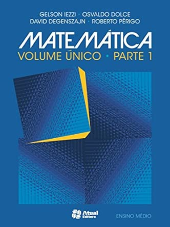
Matemática — Volume ÚnicoMain
Gelson Iezzi et al.
A complete Brazilian high-school mathematics reference, widely used for university entrance preparation. Use it as a reference and leveling tool, not as linear reading.
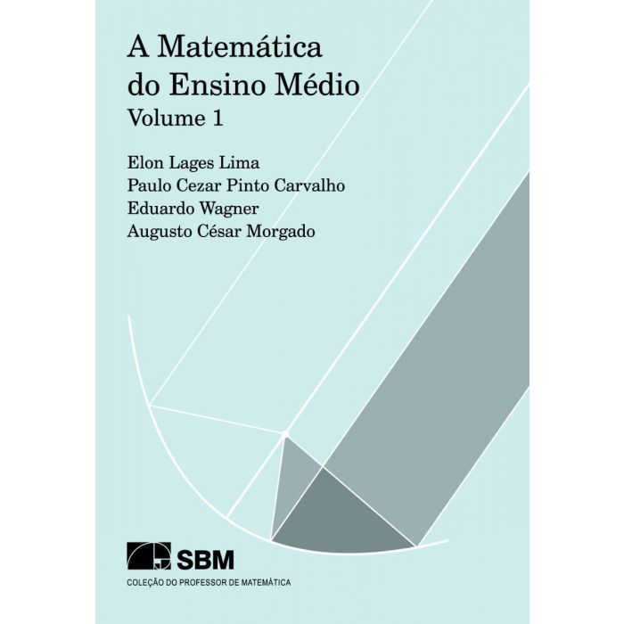
A Matemática do Ensino Médio (3 vols.)Complementary
Elon Lages Lima
Originally aimed at teacher development, it covers the same material as Iezzi with genuine mathematical rigor. Do not dwell on it for too long. Use it as a bridge toward formal mathematical thinking.
What to Absorb
- Algebraic operations and factoring
- Functions and their graphs
- Exponential, logarithmic, and trigonometric functions
- Equations and inequalities
- Basic analytic geometry
Minimum to Move On:the topics above, using Iezzi as a guide for specific gaps
Ready to Move On When:
- You manipulate algebraic expressions and functions without hesitation
- You know the behavior of elementary functions and their graphs
- You solve equations and inequalities without needing to look up formulas
02
Basic · Undergraduate · Complete
Logic and Proofs
Learning to think and write mathematically
📚 2 books: 1 main + 1 complementary
One of the most important phases in the entire roadmap. Mathematics is not calculus. It is logical rigor and proof. Here you learn the language: quantifiers, implication, negation, induction, contradiction, contraposition. Without this, there is simply no moving forward.
How to StudyCordeiro should be read with pencil and paper. Try to write every proof before looking at the solution, even if you get stuck for hours. That struggle is part of the formation. Velleman is complementary: work through it if you want a truly solid foundation for the phases ahead.
Books
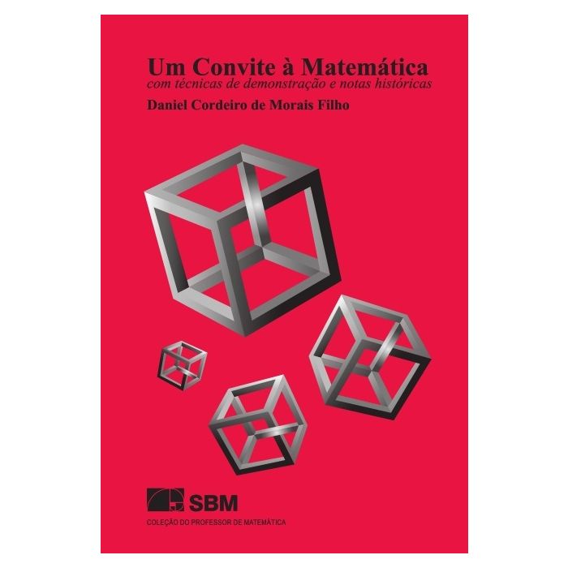
Um Convite à MatemáticaMain
Marcelo Cordeiro e Daniel Tyszler
The central book of this phase. Teaches the language of mathematics: logic, quantifiers, and the main proof techniques. Accessible, well written, and directly useful for what comes next.
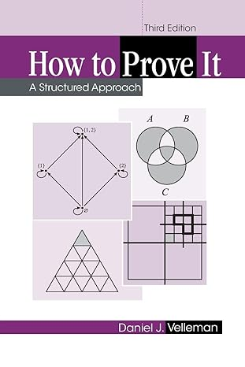
How to Prove ItComplementary
Daniel J. Velleman
A more formal and systematic approach. Work through it if you want a truly solid foundation, especially if you intend to go beyond the Basic Track.
What to Absorb
- Propositional logic and quantifiers
- Implication, negation, contraposition
- Proof by induction
- Proof by contradiction
- Sets, functions, relations
Minimum to Move On:the topics above mastered: you can write complete proofs
Ready to Move On When:
- You understand what it means to prove something
- You can write a proof by induction, contradiction, or contraposition without consulting a model
- You know the difference between ∀ and ∃ and how to negate each
03
Basic · Undergraduate · Complete
Elementary Number Theory
Divisibility, congruences, and first arithmetic arguments
📚 2 books: 1 main + 1 complementary
Phase 2 (Logic and Proofs)
An elementary number theory phase is excellent for practicing proofs in a concrete setting. Divisibility, congruences, primes, the Euclidean algorithm, and modular arithmetic offer accessible yet mathematically rich problems. This phase prepares the reader for abstract algebra, field theory, Galois theory, and the more advanced number theory of the undergraduate track.
How to StudyUse Burton as the main text. This phase is less about accumulating sophisticated results and more about learning to prove: working with divisibility, congruences, induction, contradiction, and examples. Jones & Jones enters as a complement to reinforce exercises and offer another organization of the same material. There is no need to study advanced number theory topics at this stage.
Books
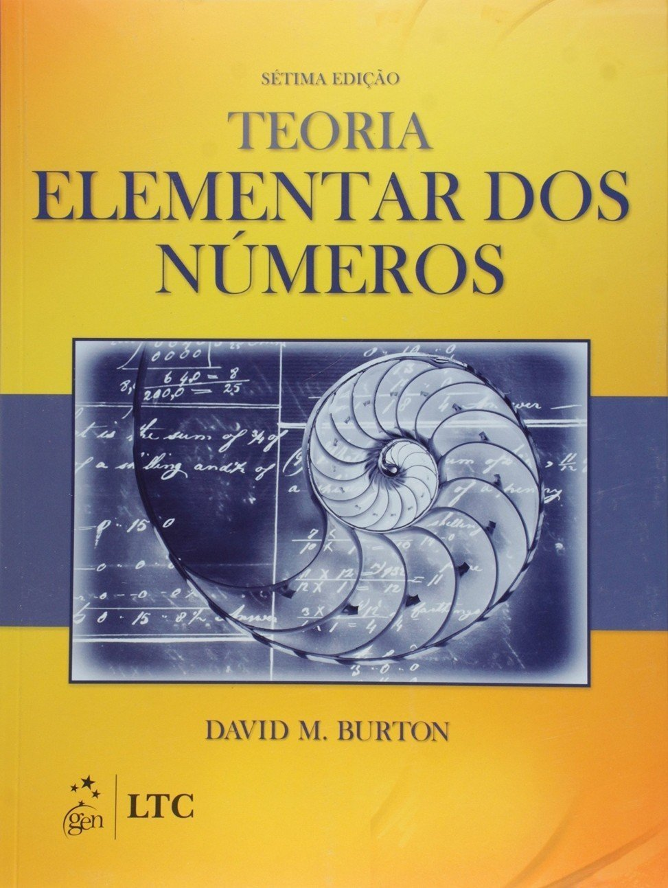
Elementary Number TheoryMain
David M. Burton
The main text for a first encounter with number theory. Straightforward, accessible, and well suited to self-study, with many exercises. The focus should be divisibility, the Euclidean algorithm, congruences, the Chinese Remainder Theorem, elementary arithmetic functions, and first results on primes.
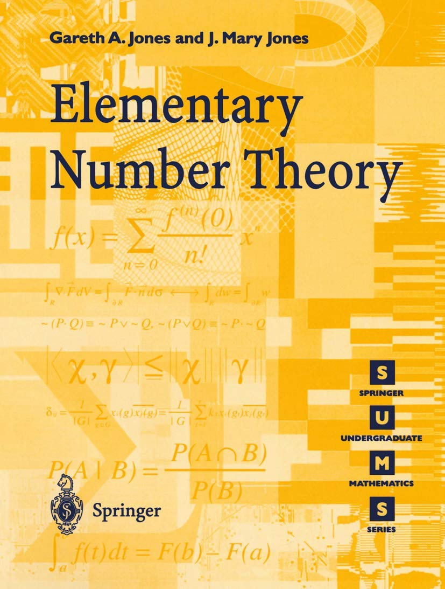
Elementary Number TheoryComplementary
Gareth A. Jones and J. Mary Jones
A clear and well-organized complement, useful for seeing the same elementary arithmetic from a different angle. Works especially well as support for exercises, examples, and solidifying the language of congruences.
What to Absorb
- Divisibility, the Euclidean algorithm, and greatest common divisor
- Prime numbers and unique factorization
- Congruences and modular arithmetic
- Chinese Remainder Theorem in simple examples
- Fermat's little theorem and Euler's theorem
- Elementary arithmetic functions at an introductory level
- First simple Diophantine problems
Minimum to Move On:mastery of divisibility, congruences, the Euclidean algorithm, unique factorization, and the first arithmetic theorems, solving simple exercises without relying on ready-made solutions
Ready to Move On When:
- You can prove basic results on divisibility and greatest common divisor
- You solve linear congruences and simple modular arithmetic problems
- You understand and apply the Chinese Remainder Theorem in concrete examples
- You can use Fermat/Euler in elementary problems
- You are more comfortable writing short, precise proofs
04
Basic · Undergraduate · Complete
Calculus I
Limits, derivatives, integrals, and series
📚 2 books: 1 main + 1 complementary
Phases 1 and 2 (Precalculus; Logic and Proofs)
The heart of Calculus is the limit. This phase does not use books like Stewart, which is too elementary for this roadmap, or Guidorizzi, which is less motivating for self-study. The chosen books introduce the definition of sequence convergence, and understanding this concept greatly aids the understanding of limits. Caminha is the main text; Táboas enters as a complement to reinforce and extend.
How to StudyFor every theorem, try to understand why each hypothesis is necessary before reading the proof. Use Táboas on topics where Caminha is more concise. The two complement each other well. Do not move on without understanding sequences and series: they reappear throughout Real Analysis.
Books
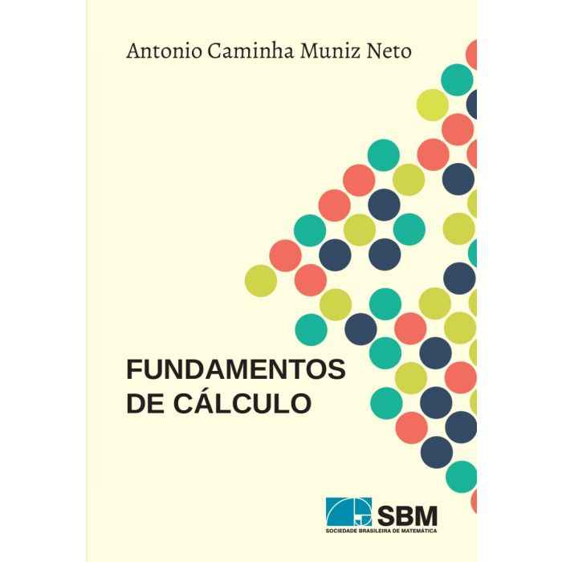
Fundamentos de CálculoMain
Antônio Caminha
Rigorous, modern, and with worked exercises. Covers limits, continuity, derivatives, integrals, and sequences/series with genuine mathematical honesty. One of the best entry points into serious calculus in Portuguese.
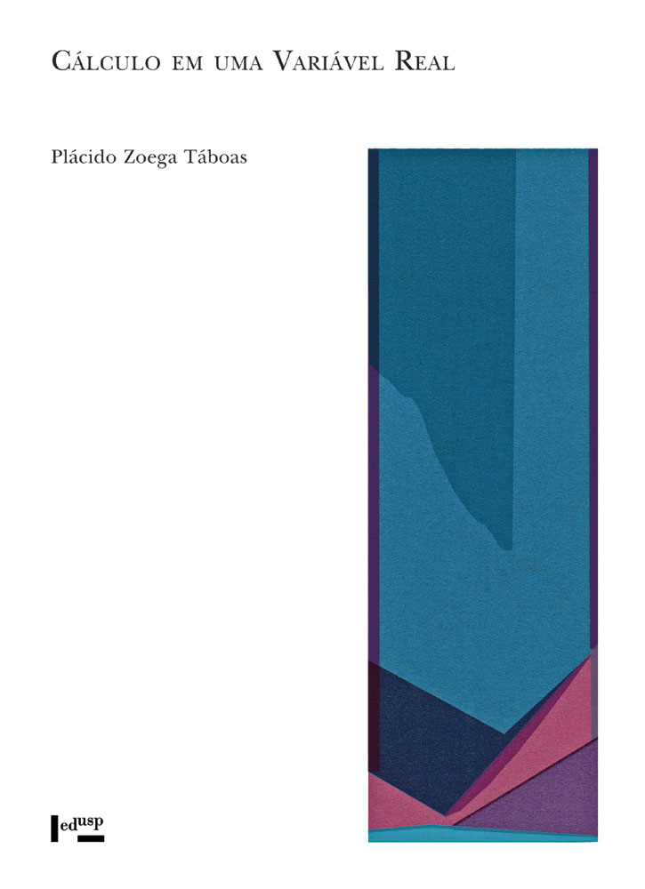
Cálculo em Uma Variável RealComplementary
Plácido Táboas (ICMC-USP)
More comprehensive on several topics, with solid coverage of sequences and series. Use in parallel: when you get stuck on a topic in Caminha, see how Táboas approaches it.
What to Absorb
- Definition of sequence convergence
- Definition of limit and continuity
- Derivatives and differentiation rules
- Mean Value Theorem and applications
- Riemann integral and Fundamental Theorem of Calculus
- Sequences and series: convergence and convergence tests
Minimum to Move On:the topics above, using Caminha as the main text
Ready to Move On When:
- You can prove limits from the definition
- You understand why a continuous function on a closed interval attains its maximum and minimum
- You can state and apply the three main theorems of Calculus I
05
Basic · Undergraduate · Complete
Elementary Linear Algebra
Can be studied in parallel with Calculus I
📚 2 books: 1 main + 1 complementary
Phases 1 and 2 (Precalculus; Logic and Proofs)
Independent of Calculus, this phase can run in parallel. This first encounter serves as preparation for the Linear Algebra of the Undergraduate Track, where the subject is treated with the depth it deserves.
How to StudyFor every new concept, ask what it means geometrically. Geometric intuition is as important as formalism at this stage.
Books
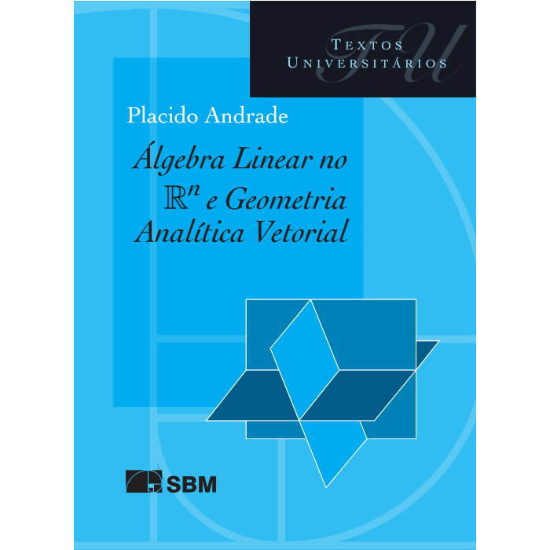
Álgebra Linear no ℝⁿ e Geometria Analítica VetorialMain
Plácido Andrade (SBM)
An excellent first rigorous treatment. Covers vector spaces, linear transformations, and analytic vector geometry in an integrated way, without sacrificing mathematical precision. Published by SBM, well calibrated for those just starting out.
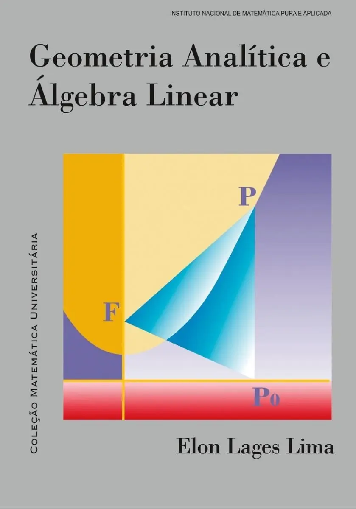
Geometria Analítica e Álgebra LinearComplementary
Elon Lages Lima
A more geometric perspective. Use one or the other and prioritize the main text. Together they may be redundant at this level.
What to Absorb
- Linear systems and row reduction
- Vector spaces, subspaces, basis, and dimension
- Linear transformations and matrices
- Determinants
- Eigenvalues, eigenvectors, and diagonalization
- Inner product and orthogonality
Minimum to Move On:the topics above, using Plácido Andrade as the main text
Ready to Move On When:
- You understand what a vector space is and can verify the axioms
- You can work with basis, dimension, and linear transformations
- You compute eigenvalues and understand what they mean geometrically
06
Basic · Undergraduate · Complete
Multivariable Calculus
Functions of ℝⁿ and the classical integral theorems
📚 3 books: 2 main + 1 complementary
Phase 4 (Calculus I)
Extends calculus to functions of several variables, culminating in the theorems of Green, Stokes, and Gauss, which will be unified and generalized in Multivariable Analysis further ahead.
How to StudyAlternate between Lang and Diomara, as they complement each other. Marsden & Tromba enters as a targeted reference when you want more depth. Do not skimp on drawing: visualizing vector fields and surfaces is half the learning, and it genuinely makes a difference in problem solving.
Books
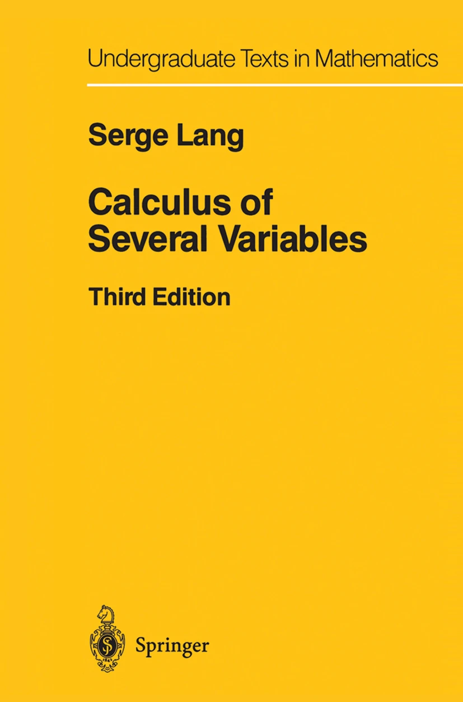
Calculus of Several VariablesMain
Serge Lang
Direct, rigorous, and no-nonsense. Covers partial derivatives, gradient, Lagrange multipliers, multiple integrals, and the classical theorems with precision and elegance.
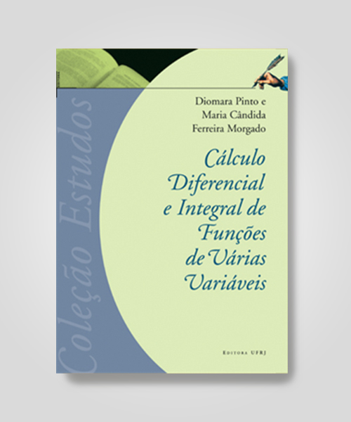
Cálculo Diferencial e Integral de Funções de Várias VariáveisMain
Diomara Pinto e Regina Noguchi
Complements Lang with more examples and exercises. Alternate between the two: what one treats briefly, the other expands.
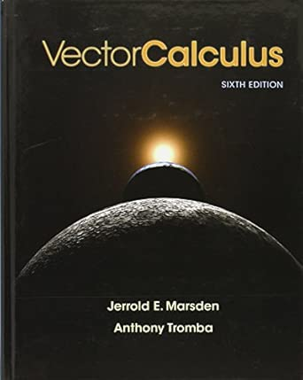
Vector CalculusComplementary
Marsden e Tromba
Use one or the other and prioritize the first two. Useful as a third targeted perspective, especially on the integral theorems.
What to Absorb
- Partial derivatives, gradient, and Jacobian
- Chain rule in several variables
- Local extrema and Lagrange multipliers
- Multiple integrals and change of variables
- Theorems of Green, Stokes, and Gauss
- Vector fields and conservative fields
Minimum to Move On:the topics above, with conceptual mastery of total differentiability vs. partial derivatives, interpretation of the Jacobian as a linear map, and understanding of the hypotheses of Green's, Gauss's, and Stokes's theorems
Ready to Move On When:
- You clearly distinguish partial derivatives, directional derivatives, and total differentiability — with examples and counterexamples
- You interpret the Jacobian as a linear map and local approximation, not merely a computational matrix
- You know when and why to apply Green, Gauss, or Stokes, and understand their hypotheses
07
Basic · Undergraduate · Complete
Real Analysis on the Line
Exit point of the Basic Track
📚 4 books: 3 main + 1 advanced
Phase 4 (Calculus I)
This is the most transformative phase in the roadmap. Real Analysis on the Line gives structure and rigor to everything done in Calculus. Do not rush here. It is the culmination of all prior study. Anyone who completes this phase well — and then decides to stop — will have a mathematical foundation far above average.
How to StudyChoose one of the three main books and follow it seriously. Zahn and Abbott are the best entry points for self-study readers. Elon is the definitive Portuguese-language classic: use it as a complement, or as your main text if you prefer concision and elegance. Baby Rudin should only be attempted if the other three already feel easy: it is more demanding, introduces metric spaces early, and makes no concessions to rigor. If you read it, go through chapter 8.
Books
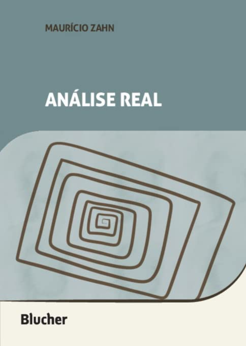
Análise RealMain
Maurício Zahn
An excellent entry point into Real Analysis. More accessible than Elon at several points, without sacrificing rigor. Highly suitable for self-study.
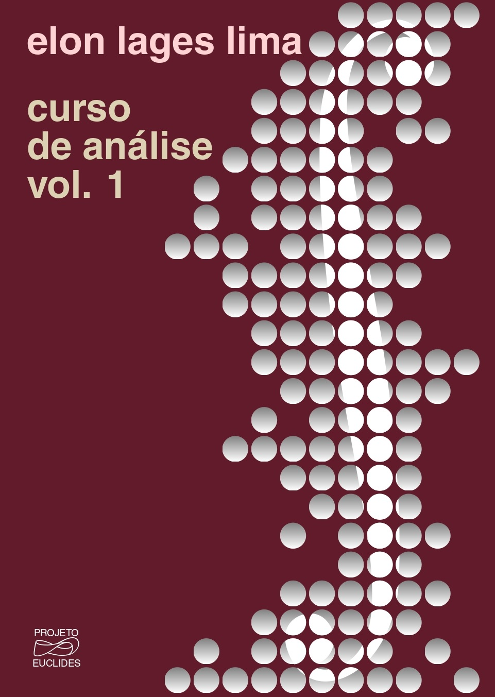
Curso de Análise — Vol. 1Main
Elon Lages Lima
The definitive Portuguese-language classic on Real Analysis. Covers the real numbers, topology of the line, limits, continuity, derivatives, and the Riemann integral with elegance and clarity that are hard to surpass.
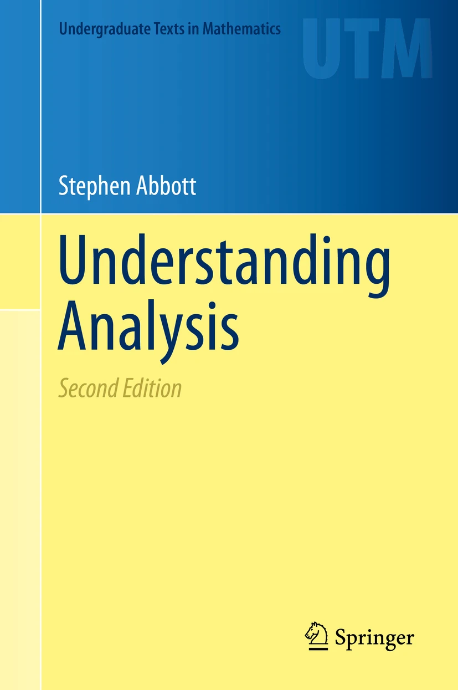
Understanding AnalysisMain
Stephen Abbott
One of the best introductory analysis books in English. Clear, motivating, and well organized, with an excellent balance between intuition and rigor. Especially strong for self-study readers.
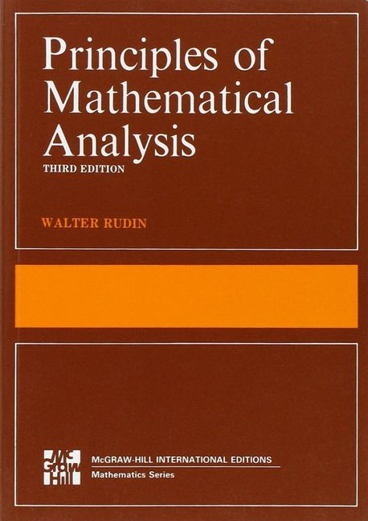
Principles of Mathematical AnalysisAdvanced
Walter Rudin
The famous and feared Baby Rudin. Dense, uncompromising, and precise. The most celebrated analysis textbook in the world. Attempt it only if the other three already feel easy. If you read it, go through chapter 8.
What to Absorb
- Construction of the real numbers and completeness
- Topology of the line: open sets, closed sets, compact sets
- ε-δ definition of limit and continuity
- Intermediate Value Theorem and Heine-Cantor theorem
- Differentiability and Mean Value Theorem
- Riemann integral: definition and properties
- Pointwise and uniform convergence of sequences of functions
Minimum to Move On:the topics above with genuine rigor: computing is not enough — you must be able to prove
Exit point of the Basic Track. Ready when:
- You can prove the Intermediate Value Theorem and Bolzano-Weierstrass from the definitions
- You understand the completeness of the reals and why it matters
- You distinguish pointwise and uniform convergence of sequences of functions
Upon completing the Basic Track
- Congratulations: you will have built a mathematical foundation well above average in mathematical language, elementary arithmetic, calculus, and introductory analysis.
- This is a legitimate endpoint for serious enthusiasts, teachers, programmers, and curious readers.
- If you want to continue into the Undergraduate Track, the next step is to consolidate Linear Algebra, Abstract Algebra, Topology, and the first more formal mathematical structures.
↑ Back to phase map
08
Undergraduate · Complete
Linear Algebra
One of the most important subjects in the entire roadmap
📚 3 books: 1 main + 2 complementary
Phase 5 (Elementary Linear Algebra)
The first contact in Phase 5 served as preparation. Here the subject is treated with the depth it deserves. Linear Algebra is the foundation of virtually all of mathematics: without it, there is no advancing in Analysis, Geometry, or Topology. Do not neglect it.
How to StudyThe three books complement each other. Coelho is the main text: rigorous, well structured, and clearly written. Hoffman & Kunze is the absolute classic that every mathematician consults; like Baby Rudin in Analysis, it is probably the most celebrated linear algebra textbook in the world. Axler is an elegant alternative that avoids determinants at the outset. Serious reading of at least two of the three is the ideal.
Books
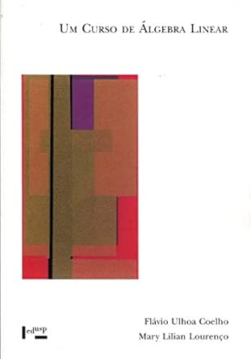
Um Curso de Álgebra LinearMain
Flávio Ulhoa Coelho e Mary Lilian Lourenço
The best Portuguese-language option at this level. Rigorous and well written, covering vector spaces, linear transformations, eigenvalues, canonical forms, and inner products with the depth the phase demands.
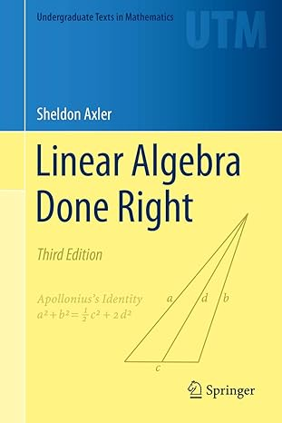
Linear Algebra Done RightComplementaryFree ↗
Sheldon Axler
Determinant-free approach that keeps full focus on linear transformations and their intrinsic structure. Builds excellent intuition about operators and is a great source of problems. Freely available on the author's website.
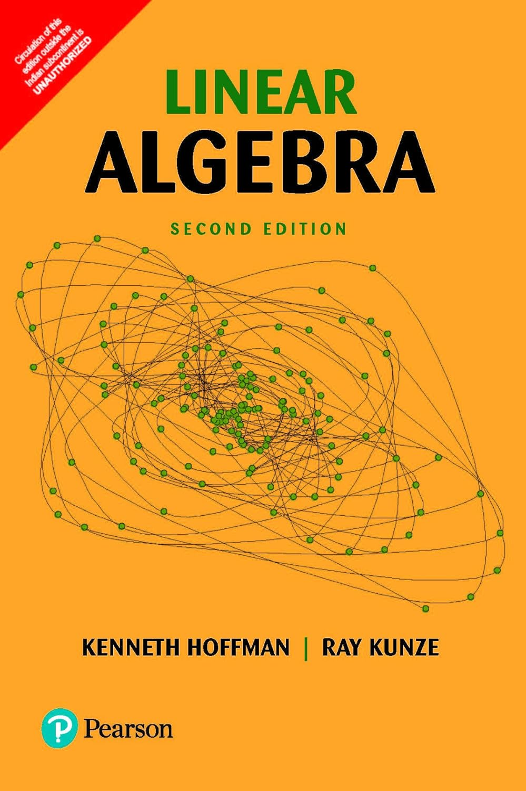
Linear AlgebraReference
Hoffman e Kunze
The classic. Rigorous and complete: covers spaces over general fields, Jordan form, modules, and multilinear forms. Demanding, but readers come out stronger for it.
What to Absorb
- Vector spaces over general fields
- Linear operators and their structure
- Minimal polynomial and characteristic polynomial
- Jordan canonical form
- Bilinear forms and the spectral theorem
- Inner product spaces over ℂ
Minimum to Move On:the topics above via Coelho. Hoffman & Kunze is enrichment, not a strict prerequisite
Ready to Move On When:
- You work with vector spaces over general fields with confidence
- You understand Jordan canonical form and can construct it
- You command bilinear forms and the spectral theorem
09
Undergraduate · Complete
Algebra I
Groups, rings, and fields
📚 2 books
Phase 5 (Elementary Linear Algebra)
First serious encounter with the fundamental algebraic structures. The target is chapters 0–19 of Gallian or 1–26 of Pinter. The chance of developing a genuine interest in algebra after these topics is very high.
How to StudyChoose one of the two and consult the corresponding section of the other. Always work with concrete examples: symmetry groups, integers modulo n, polynomials over ℚ. Every abstract theorem must be verified in two or three examples before it can be considered understood.
Books
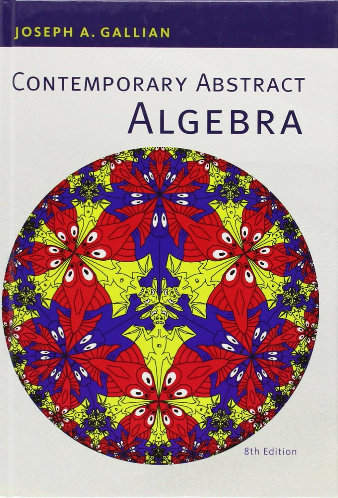
Contemporary Abstract AlgebraMain
Joseph Gallian
Accessible, with many examples and historical context. Makes the subject feel natural and motivated, not merely abstract and axiomatic.
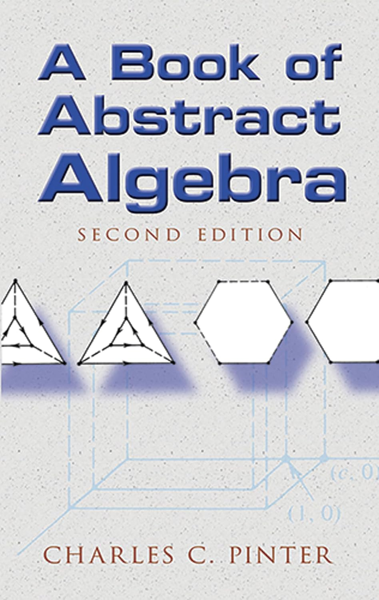
A Book of Abstract AlgebraMain
Charles C. Pinter
Written with exceptional clarity and excellent exercises. Consult the section corresponding to whatever you are studying in Gallian.
What to Absorb
- Groups, subgroups, cyclic groups
- Homomorphisms and isomorphism theorems
- Quotient groups and Lagrange's theorem
- Rings, ideals, and quotient rings
- Integral domains and fields
- Polynomials and field extensions (introduction)
Minimum to Move On:the topics above. Chapters 0–19 of Gallian or 1–26 of Pinter cover the essentials
Ready to Move On When:
- You can prove Lagrange's theorem and understand its consequences
- You know what a homomorphism is and can prove the First Isomorphism Theorem
- You understand quotient groups and quotient rings
10
Undergraduate · Complete
Number Theory
Can be studied in parallel with Algebra I
📚 3 books: 2 main + 1 complementary
Phase 3 (Elementary Number Theory)
This phase returns to number theory at the undergraduate level, now with more mathematical maturity. The goal is to deepen congruences, arithmetic functions, sums, quadratic reciprocity, first analytic methods, and connections with algebra. Apostol serves as the more accessible, analytic main entry; Ireland & Rosen is the robust main path for those who want to go deeper in the algebraic direction; and Um Passeio com Primos broadens mathematical culture with challenging problems and special topics.
How to StudyBegin with Apostol, without any obligation to read it in full. The core of the phase lies in arithmetic functions, congruences, sums, products, elementary estimates, and first analytic methods. Use Ireland & Rosen as a robust main route if you develop a serious interest in number theory, especially in the algebraic direction: finite fields, reciprocity, Gauss and Jacobi sums, zeta and L-functions, and algebraic number theory. Um Passeio com Primos works as a challenging Brazilian complement, excellent for problems, seminars, and mathematical culture. This phase can be studied in parallel with Algebra I.
Books
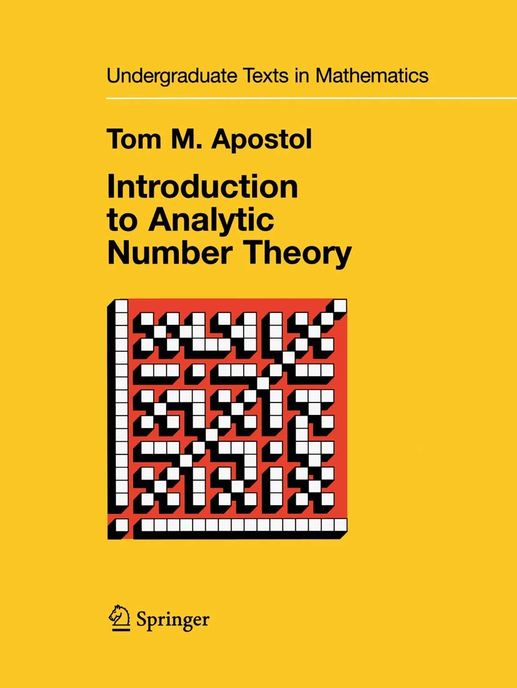
Introduction to Analytic Number TheoryMain
Tom M. Apostol
Main text for the more accessible, analytic route. Despite the somewhat intimidating title, it is perfectly manageable with basic elementary number theory and some analysis. Serves as a natural bridge between elementary arithmetic, arithmetic functions, sums, products, Dirichlet series, and first analytic methods. No need to read it in full: use it as the axis for consolidating the analytic language of number theory.
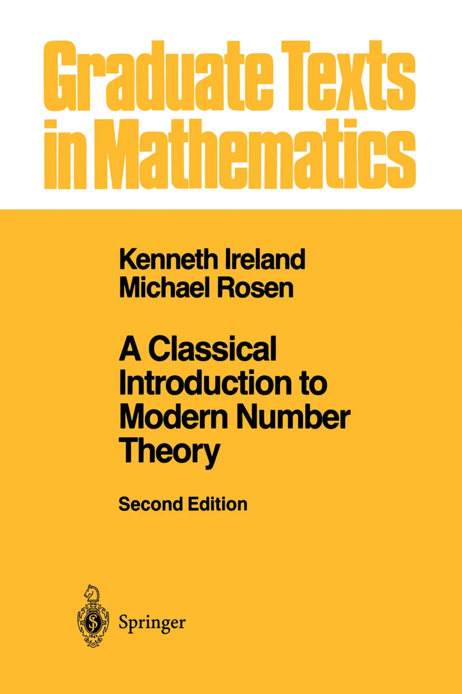
A Classical Introduction to Modern Number TheoryMain
Kenneth Ireland e Michael Rosen
The robust main text for those who develop a genuine interest in number theory. More algebraic and directional, leading from elementary theory to finite fields, quadratic and higher reciprocity, Gauss and Jacobi sums, zeta and L-functions, algebraic number theory, cyclotomic fields, Diophantine equations, and elliptic curves. No need to read it entirely on a first pass: use it as an algebraic deepening route.
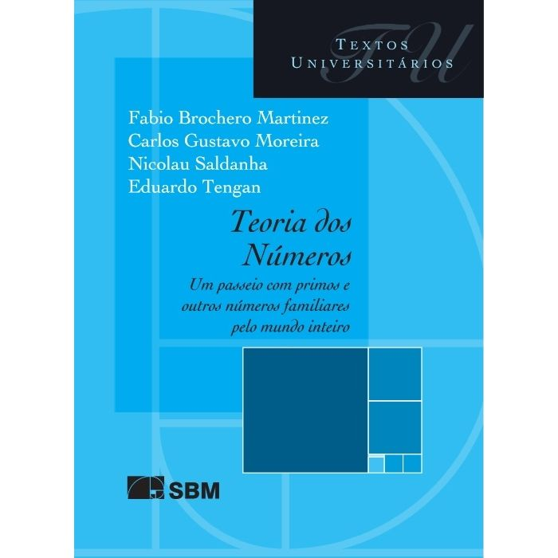
Um Passeio com Primos e Outros Números Familiares pelo Mundo InteiroComplementary
Carlos Gustavo Tamm de Araújo Moreira, Nicolau Corção Saldanha e Eduardo Tengan
A broad, challenging, and culturally rich Brazilian complement. The first part covers the traditional elementary number theory syllabus; the second opens up to independent topics such as primality, AKS, Lucas–Lehmer, algebraic integers, elliptic curves, and a bridge to the Prime Number Theorem. Excellent for harder problems, seminars, university olympiads, and connections with analysis, algebra, and geometry.
What to Absorb
- Arithmetic functions and operations such as Dirichlet convolution
- Congruences at a more mature level
- Arithmetic sums, products, and elementary estimates
- Quadratic reciprocity and Legendre/Jacobi symbols at an introductory level
- Primitive roots and the multiplicative structure modulo n, if the chosen text reaches that far
- First connections with rings, finite fields, and extensions
- Initial intuition about Dirichlet series, zeta functions, or the distribution of primes, without requiring advanced mastery
Minimum to Move On:understanding arithmetic functions, more advanced congruences, quadratic reciprocity at an introductory level, basic arithmetic sums, and the initial bridge between number theory, analysis, and abstract algebra
Ready to Move On When:
- You can work with arithmetic functions and Dirichlet convolution in basic examples
- You understand congruences in a more structural way and recognize the significance of quadratic reciprocity
- You can follow arguments involving sums, products, and elementary estimates
- You recognize the interaction between number theory, analysis, groups, rings, and finite fields
- You are prepared to encounter Galois theory, commutative algebra, algebraic number theory, and algebraic geometry with greater arithmetic maturity
11
Undergraduate · Complete
Multivariable Analysis
Rigorous formalization of multivariable calculus
📚 4 books: 2 main + 2 complementary
Phases 5, 6, and 7 (Elementary Linear Algebra; Multivariable Calculus; Real Analysis on the Line)
Here the derivative is a linear transformation. The central result is the General Stokes Theorem, which unifies Green, Gauss, and Stokes-Kelvin into a single statement. A direct prerequisite for Differential Geometry.
How to StudyCipolatti is a good option for those who want a more direct approach, but it does not cover differential forms or the General Stokes Theorem, opting instead for the Divergence Theorem (which can also be seen as a consequence of General Stokes). In that case, complement with Munkres on those topics. Those who want the complete approach from the start should use Munkres as the main text. Mikusinski & Taylor is self-contained and already includes a simplified introduction to the Lebesgue integral, anticipating concepts from later phases.
Books
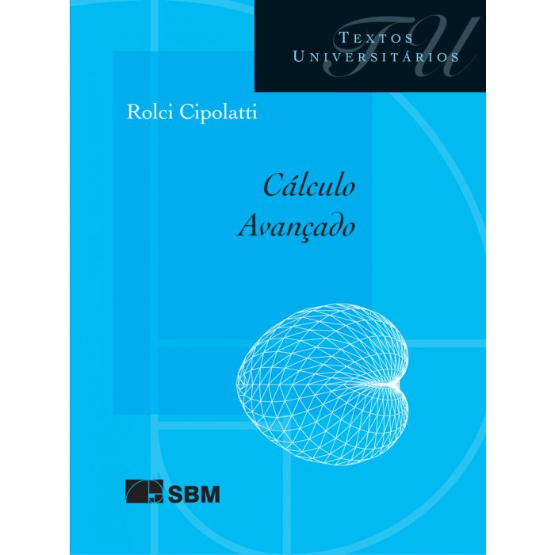
Cálculo AvançadoMain (direct option)
Rolci Cipolatti (SBM)
A national gem. Treats differentiability in normed spaces with clarity and good generality. Does not cover differential forms or the General Stokes Theorem: complement with Munkres on those topics.
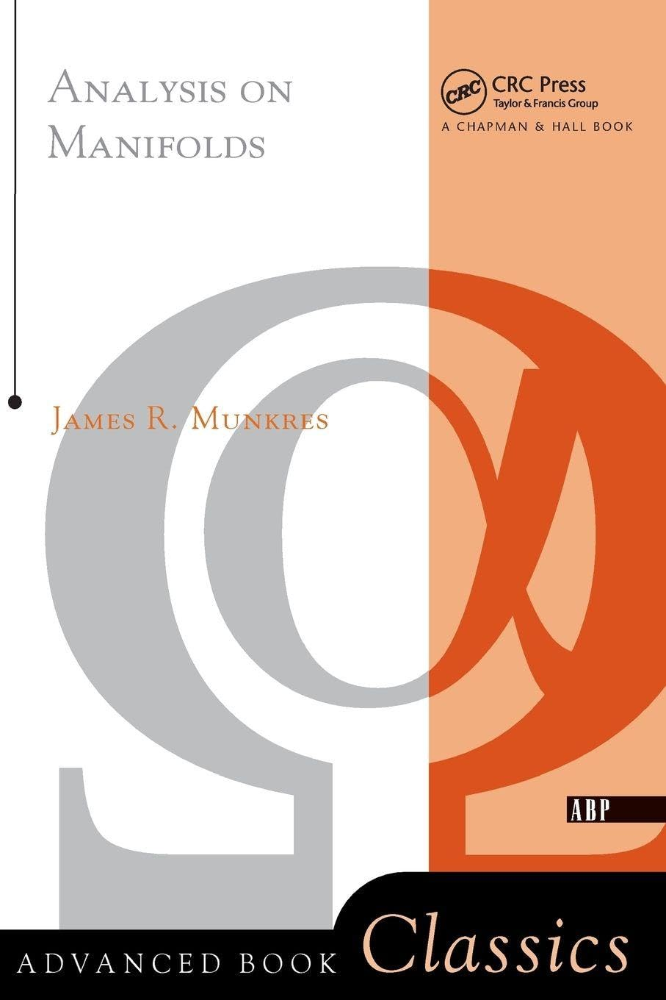
Analysis on ManifoldsMain (complete approach)
James R. Munkres
A classic in the area. Covers differentiability in ℝⁿ, the implicit function theorem, integration on manifolds, and the General Stokes Theorem with Munkres's characteristic clarity.
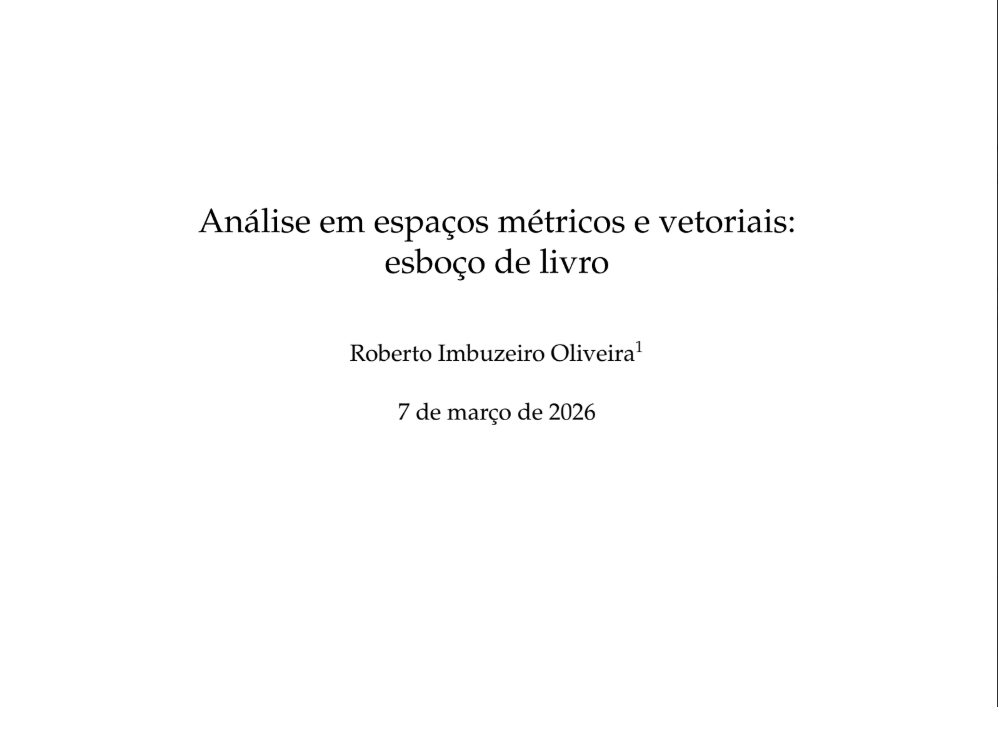
Análise no RⁿComplementary (free)Free ↗
Roberto I. Oliveira
Course notes in Portuguese for analysis in Rⁿ, with a rigorous treatment of calculus in normed spaces, close in spirit to Cipolatti. Serves as a natural complement to reinforce limits, continuity, differentiability, the Fréchet derivative, maps between normed spaces, the inverse and implicit function theorems, submanifolds, and multidimensional integration.
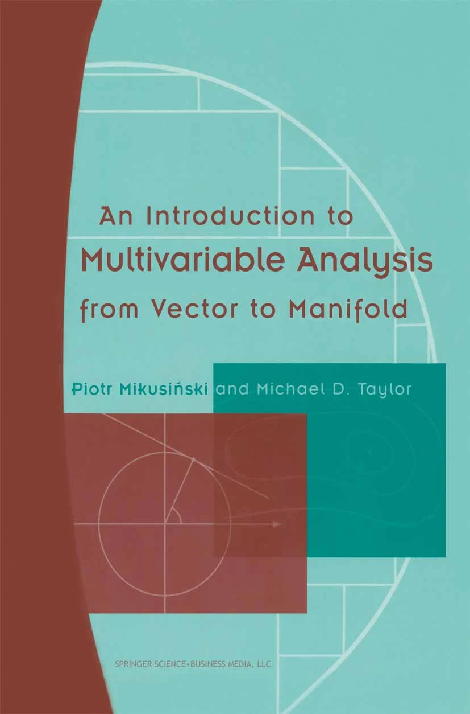
An Introduction to Multivariable AnalysisComplementary
Piotr Mikusiński e Michael D. Taylor
Self-contained and well calibrated for self-study. Already includes a simplified introduction to the Lebesgue integral, anticipating concepts from later phases.
What to Absorb
- The derivative as a linear transformation: the differential
- Implicit function theorem and inverse function theorem
- Manifolds in the Euclidean case
- Elementary differential forms
- Integration on manifolds and the General Stokes Theorem
Minimum to Move On:the topics above: Cipolatti plus the forms and Stokes chapters of Munkres, or Munkres complete
Ready to Move On When:
- You understand the derivative as a linear transformation
- You can state and apply the Implicit Function Theorem
- You understand the General Stokes Theorem as a unifying result
12
Undergraduate · Complete
Topology
Metric spaces and general topology
📚 3 books: 2 main + 1 reference
Phase 7 (Real Analysis on the Line)
The framework that unifies and generalizes the notions of neighborhood, continuity, and convergence that appeared in Real Analysis on the Line. A prerequisite for almost everything in the advanced phases.
How to StudyIdeally, start with Elon before Munkres, as the transition from metric spaces to general topological spaces is more natural that way — though it is not mandatory. Munkres is the most complete and well-written text for General Topology. Willard is a reference for consultation, not for linear reading.
Books
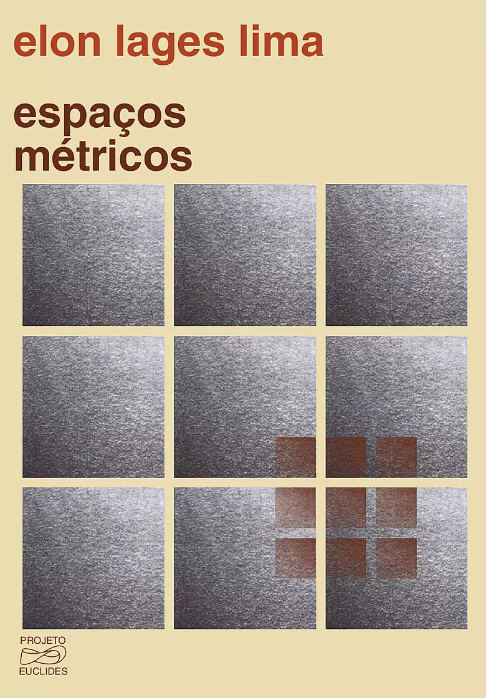
Espaços MétricosMain
Elon Lages Lima
A rigorous Portuguese-language text. Presents the metric space structure carefully: convergence, completeness, compactness, continuity. Makes the natural transition to general topology. Recommended reading before Munkres.
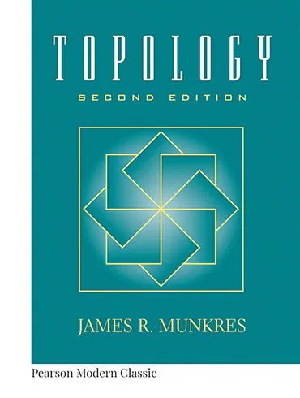
TopologyMain
James R. Munkres
The world reference for General Topology. One of the finest mathematics books of the twentieth century. Every chapter is a model of how to present mathematics with clarity without sacrificing rigor. Do not rush through it.
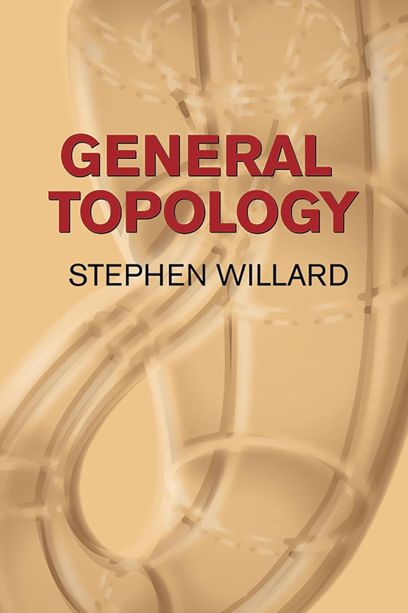
General TopologyReference
Stephen Willard
More complete than Munkres, with more results and counterexamples. Use as a reference after Munkres.
What to Absorb
- Metric spaces: convergence, completeness, compactness
- Axiomatic definition of a topological space
- Bases, subspaces, and product topology
- Continuity, homeomorphisms
- Compactness and Tychonoff's theorem
- Connectedness and path-connectedness
- Separation axioms: Hausdorff, normal
Minimum to Move On:the topics above: Elon covers metric spaces; Munkres Part I covers general topology
Ready to Move On When:
- You work with the axiomatic definition of a topological space
- You understand compactness and why it matters
- You distinguish connectedness from path-connectedness
13
Undergraduate · Complete
Complex Variables
One of the most elegant areas of all mathematics
📚 4 books: 1 main + 2 complementary + 1 visual
Phases 6 and 7 (Multivariable Calculus; Real Analysis on the Line)
Functions differentiable over the complex numbers have surprisingly rigid properties: differentiable once means differentiable infinitely many times and analytic. Cauchy's theorem and residue theory have far greater reach than they first appear. Choose Soares as the main text and complement with Bak or Palka.
How to StudyThe Cauchy-Riemann conditions say the function preserves angles: it is a conformal map. Always try to visualize what a complex function does geometrically. Needham is the reference for this: read it in parallel to build visual intuition.
Books
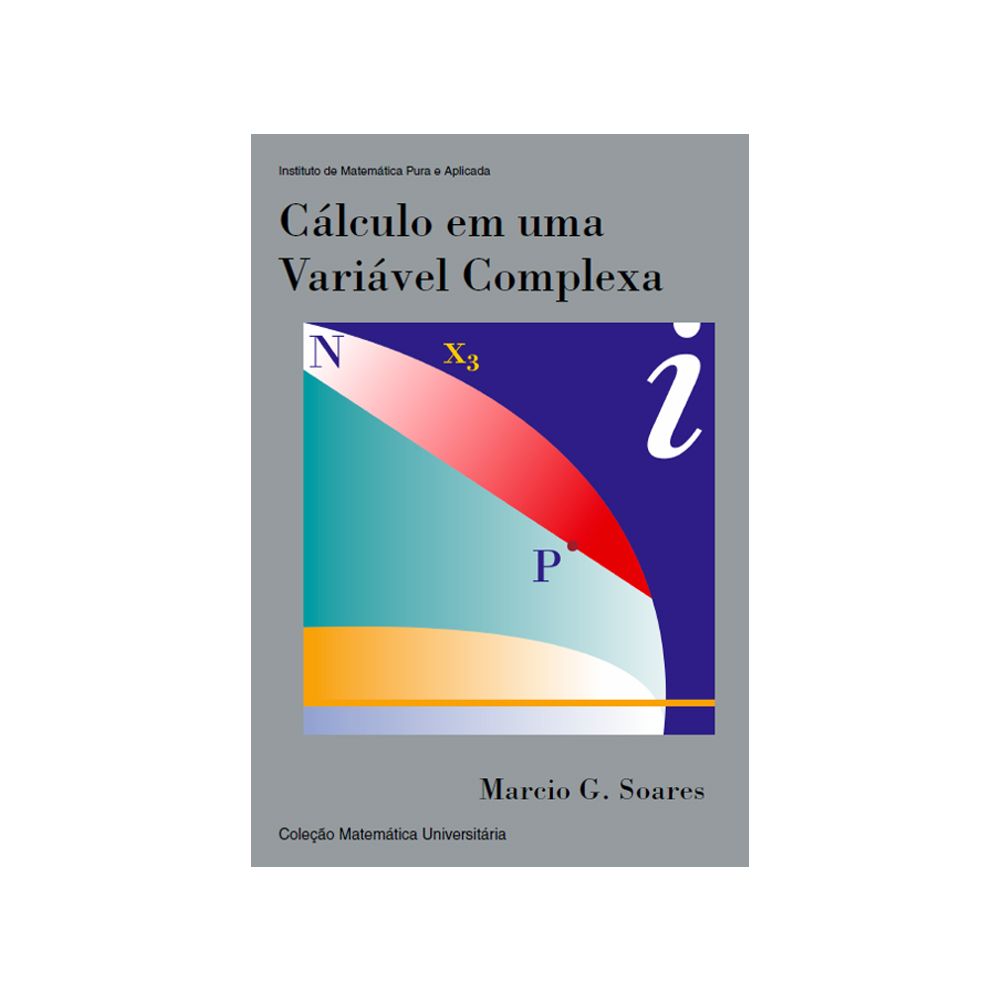
Cálculo em Uma Variável ComplexaMain
Márcio G. Soares
An excellent national entry point. Accessible and well motivated, covering Cauchy-Riemann, complex integration, Cauchy's theorem, and residues with clarity.
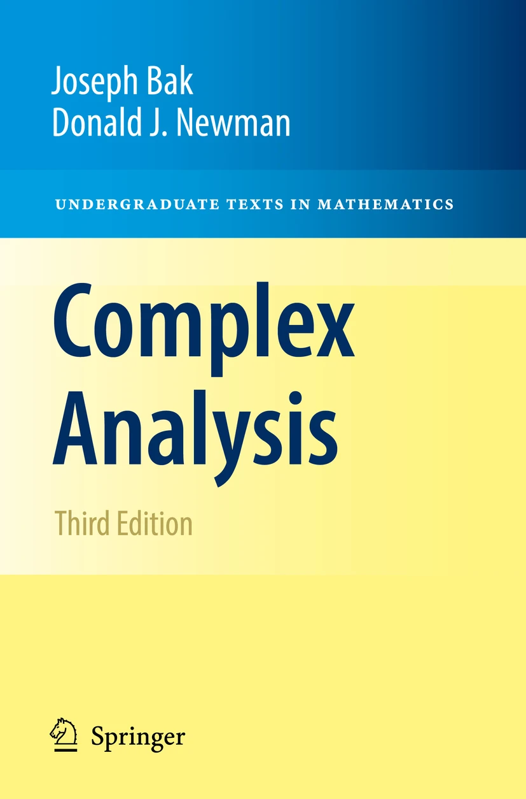
Complex AnalysisComplementary
Bak e Newman
Equivalent to Soares in level and coverage. Consult it when you want a second exposition of the same topics.
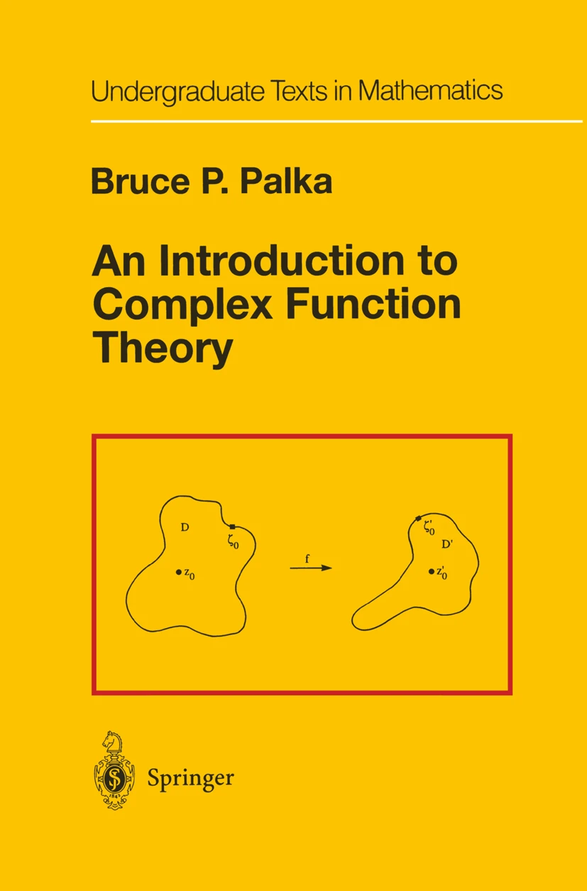
An Introduction to Complex Function TheoryComplementary
Bruce P. Palka
Well structured and detailed. Covers introductory complex analysis more extensively than Bak & Newman, making it a good option for those who want to deepen specific topics such as integration in the complex plane and Laurent series.
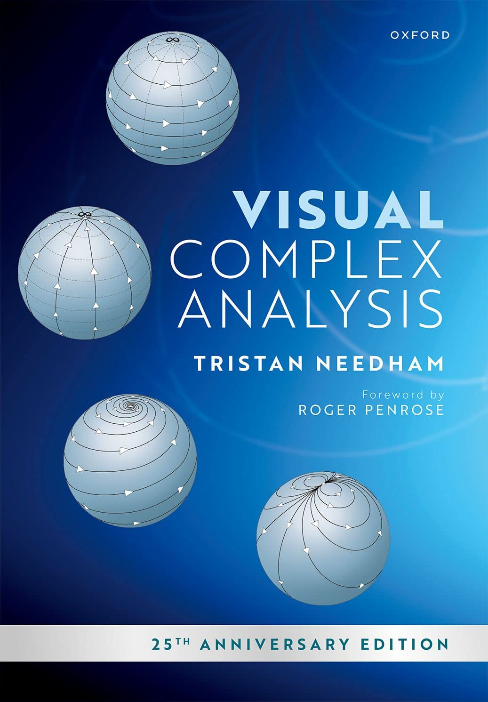
Visual Complex AnalysisVisual / Parallel
Tristan Needham
The reference for geometric intuition in Complex Analysis. Parallel reading — it does not replace the others.
What to Absorb
- Analytic functions and the Cauchy-Riemann conditions
- Line integrals in the complex plane
- Cauchy's theorem and integral formula
- Taylor and Laurent series
- Singularities and their classification
- Residue theorem and applications
Minimum to Move On:the topics above, using Soares as the central reference
Ready to Move On When:
- You understand the Cauchy-Riemann conditions and their geometric interpretation
- You apply Cauchy's theorem and compute integrals via the Residue Theorem
- You expand in Laurent series and classify singularities
14
Undergraduate · Complete
Geometry of Curves and Surfaces
Local geometry before manifolds
📚 4 books: 1 main + 2 complementary + 1 reference
Phases 5 and 6 (Elementary Linear Algebra; Multivariable Calculus)
First systematic contact with classical differential geometry. The goal is to study curves and surfaces in Euclidean space before entering the abstract language of manifolds. This phase builds geometric intuition for curvature, fundamental forms, geodesics, and constructions such as the Gauss map.
How to StudyUse Shifrin as the main path: it is shorter, more direct, and contains what is needed to work through the phase with good self-study support. Then use Pressley to consolidate intuition and reinforce exercises. O'Neill is friendly but larger, so it works better for selective deepening. Do Carmo is the classic reference: excellent, but harder for self-study on a first pass — ideal for consultation or a second reading.
Books
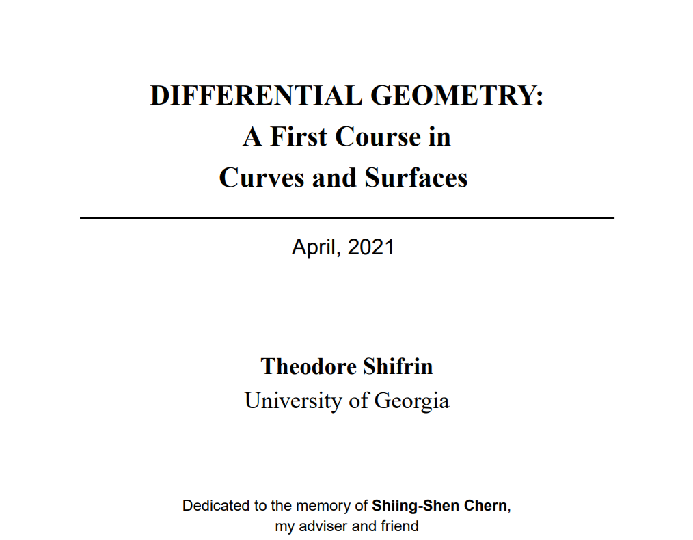
Differential Geometry: A First Course in Curves and SurfacesMain (free)Free ↗
Theodore Shifrin
The most natural starting point for this phase: concise notes, direct, and well suited to self-study. Contains the essentials of curves and surfaces, with examples, exercises, and worked solutions, giving solid support to independent learners. Use as the entry point for the phase.
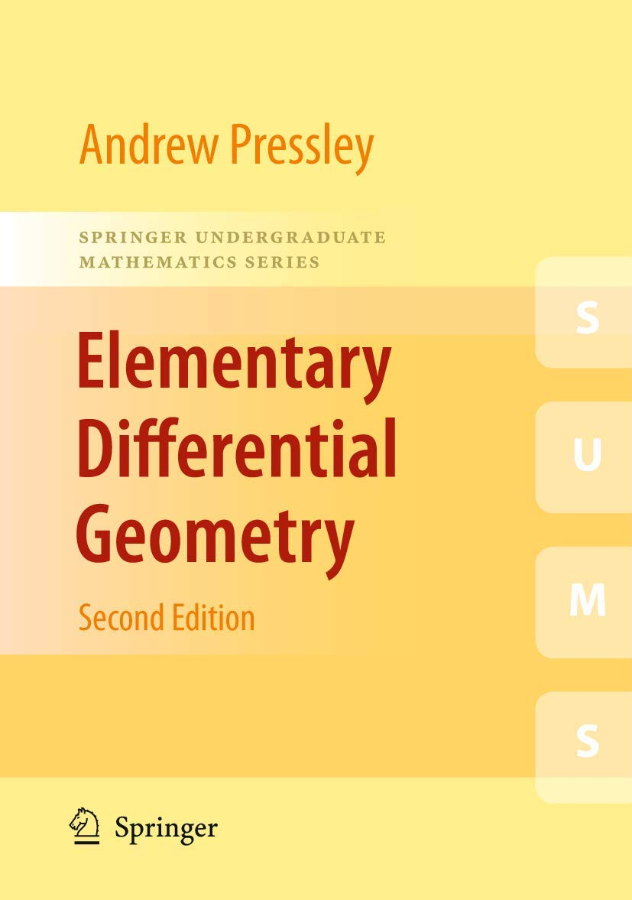
Elementary Differential GeometryComplementary
Andrew Pressley
A good second reading to consolidate the phase. Clear, well organized, with good progression and worked exercises. Works well to reinforce the geometric intuition built through Shifrin.
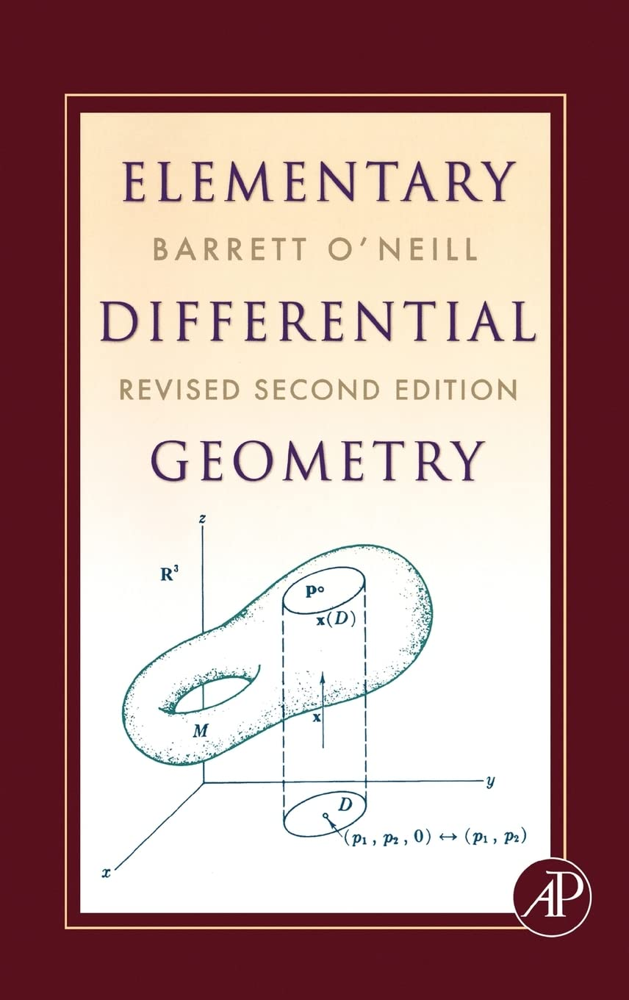
Elementary Differential GeometryComplementary
Barrett O'Neill
Friendly and quite rich, but larger and more comprehensive. Enters as complementary reading for those who want to advance at a more relaxed pace and begin to see the bridge between classical curve-and-surface geometry and Riemannian geometry.
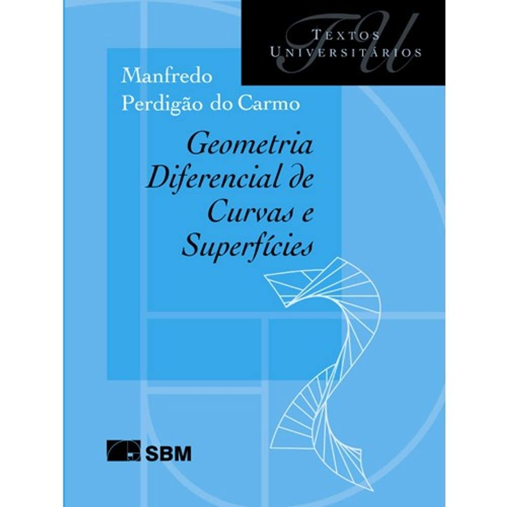
Differential Geometry of Curves and SurfacesClassic reference
Manfredo P. do Carmo
The definitive classic on curves and surfaces, but harder for self-study on a first pass. Use as a reference, second reading, or consultation to deepen specific points after gaining a foundation with Shifrin and Pressley.
What to Absorb
- Parametrized curves, arc length, and the Frenet frame
- Regular surfaces and local parametrizations
- First and second fundamental forms
- Normal, mean, and Gaussian curvatures
- Gauss map
- Geodesics on surfaces
- Theorema Egregium at an introductory level
Minimum to Move On:understanding curves, surfaces, fundamental forms, and Gaussian curvature, using Shifrin as the main text
Ready to Move On When:
- You can compute curvatures of curves and surfaces from the definitions
- You understand the first and second fundamental forms and what they measure
- You can state and interpret the Theorema Egregium
15
Undergraduate · Complete
Differential Equations
📚 3 books: 1 main + 2 complementary
Phases 5 and 6 (Elementary Linear Algebra; Multivariable Calculus)
ODEs model virtually every dynamic phenomenon in physics, biology, and engineering. The qualitative perspective — phase plane, equilibria, stability — is as important as methods for finding explicit solutions.
How to StudyUse Kreider as the main text for the first pass: elementary methods, linear equations, linear systems, and an introduction to qualitative analysis. Djairo works well as a Portuguese-language support, especially for applications and interpretation of solutions. Doering–Lopes is more rigorous and can be used selectively to deepen existence, uniqueness, and the bridge to dynamical systems. Real Analysis on the Line helps clarify existence, uniqueness, and approximation limits, but need not be treated as a formal prerequisite for this first pass.
Books
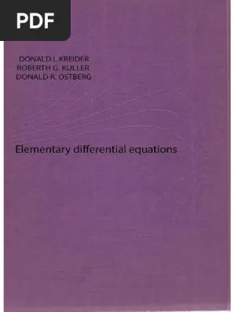
Elementary Differential EquationsMain
Kreider et al.
A classic. Well structured for a first rigorous treatment. Covers the main types of equations, linear systems, and an introduction to qualitative analysis.
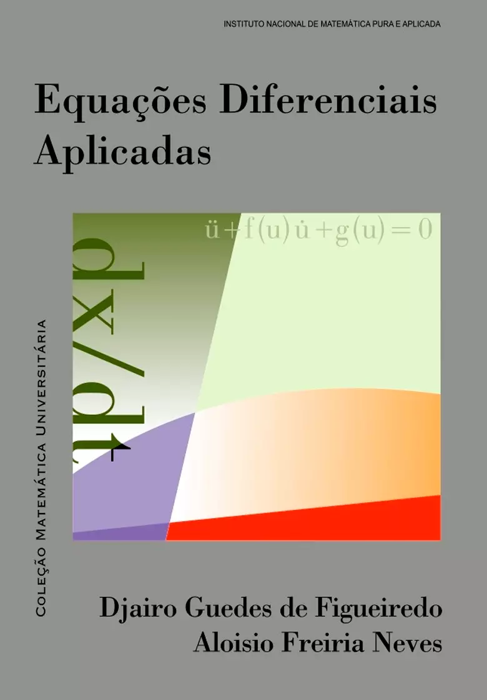
Equações Diferenciais AplicadasComplementary
Djairo Guedes de Figueiredo e Aloísio Freiria Neves
A solid national alternative for a first pass through ordinary differential equations. Develops elementary methods, basic theory, applications, and qualitative interpretation of solutions, working very well alongside Kreider. Especially useful for those who prefer a Portuguese-language reference before advancing to a more structural treatment.
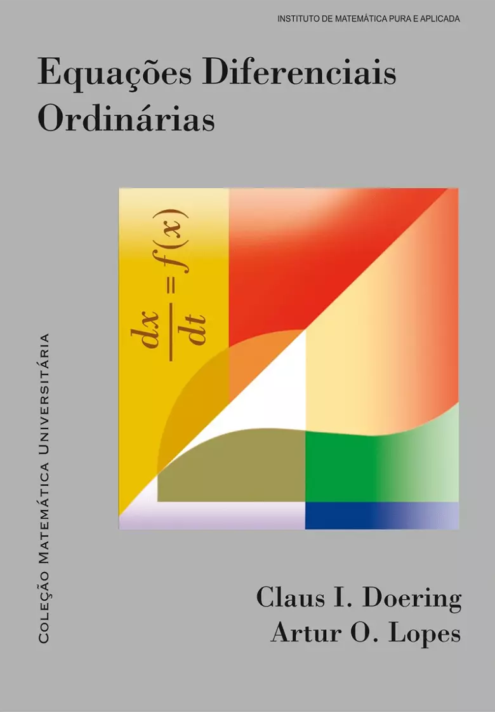
Equações Diferenciais OrdináriasComplementary
Claus Ivo Doering e Artur Oscar Lopes
A solid national reference. A good complement to Kreider, more rigorous and closer to the theory of dynamical systems.
What to Absorb
- First-order ODEs: separable, linear, exact
- Higher-order linear ODEs
- Existence and uniqueness theorem (Picard-Lindelöf)
- Linear ODE systems and the eigenvalue method
- Qualitative analysis: phase plane, equilibria, stability
Minimum to Move On:the topics above, using Kreider as the main axis
Ready to Move On When:
- You can state and apply the Picard-Lindelöf existence and uniqueness theorem
- You solve linear ODE systems using eigenvalues
- You analyze the stability of equilibria via the phase plane
16
Undergraduate · Complete
Fourier and Elementary PDE
Fourier series, Fourier transform, and classical equations
📚 4 books: 1 main + 3 complementary
Phases 7 and 15 (Real Analysis on the Line; Differential Equations)
This phase introduces two central tools of mathematical analysis: the decomposition of functions into frequencies, and the elementary study of classical partial differential equations. Fourier series, the Fourier transform, convolution, separation of variables, and boundary-value problems appear here as a natural bridge between advanced calculus, analysis, ODEs, mathematical physics, and functional analysis. The phase assumes the background accumulated through ODEs — multivariable calculus, real analysis, elementary linear algebra, and basic ODE techniques. The intention is not yet to enter advanced PDE, Sobolev spaces, or distribution theory, but to build the analytic and computational intuition those subjects demand.
How to StudyUse Djairo as the main text for the phase. The first pass should prioritize Fourier series, the Fourier transform, convolution, separation of variables, and the heat, wave, and Laplace equations. Stein & Shakarchi and Folland enter as complements to deepen the Fourier part; Valéria Iório offers a good complementary route in Portuguese for undergraduate PDE. Do not try to turn this phase into Evans, Sobolev, or distribution theory: that belongs to Advanced PDE.
Books
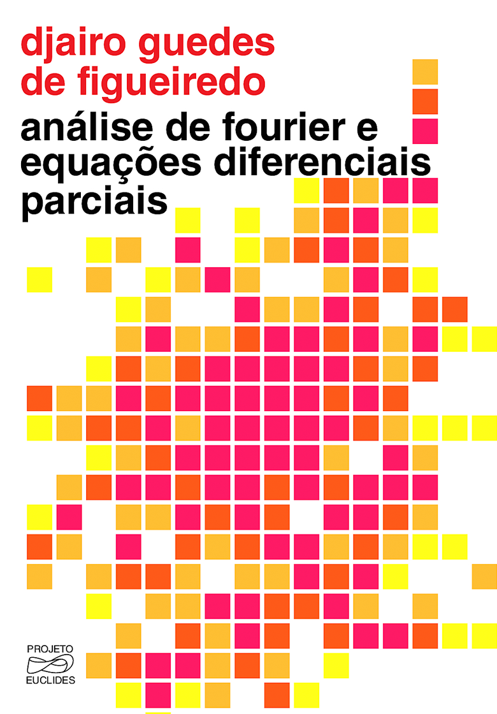
Análise de Fourier e Equações Diferenciais ParciaisMain
Djairo Guedes de Figueiredo
Main text for the phase. A natural entry point in Portuguese for Fourier series, the Fourier transform, and classical partial differential equations. Use as the base for organizing the first pass through the phase, especially on Fourier topics, separation of variables, and the heat, wave, and Laplace equations.
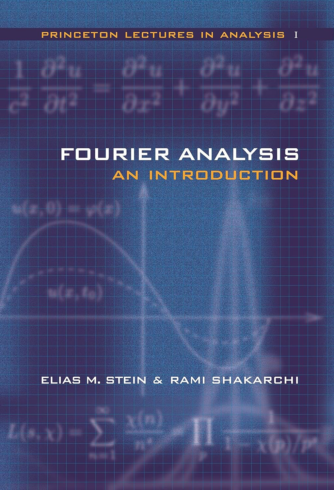
Fourier Analysis: An IntroductionComplementary
Elias M. Stein and Rami Shakarchi
A strong complement for the Fourier analysis part. Presents Fourier series, the Fourier transform, convolution, and central ideas of harmonic analysis at an accessible but mathematically serious level. Use to deepen the language of frequencies, convergence, transforms, and initial applications.
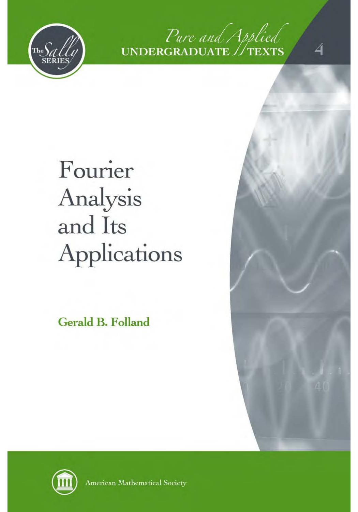
Fourier Analysis and Its ApplicationsComplementary
Gerald B. Folland
An elegant complement to reinforce the Fourier part with a clear and conceptual approach. Useful for consolidating the Fourier transform, convolution, and applications, without yet requiring the depth of an advanced harmonic analysis phase.
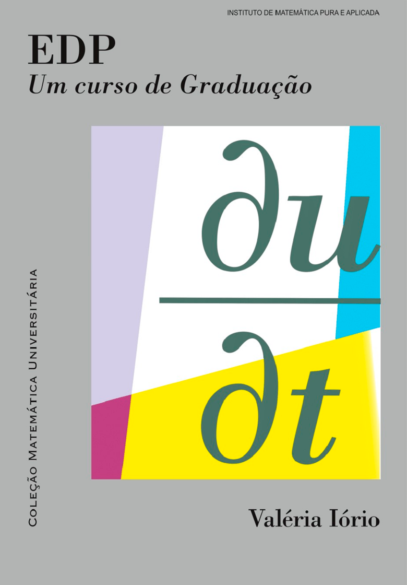
EDP: Um Curso de GraduaçãoComplementary
Valéria Iório
A Portuguese-language complement for the PDE part at the undergraduate level. Useful for studying the classical equations in a language close to the Brazilian mathematical tradition, reinforcing examples, boundary-value problems, and elementary methods.
What to Absorb
- Trigonometric series and Fourier series
- Fourier coefficients and their frequency interpretation
- Convergence of Fourier series at an introductory level
- Parseval's identity and the idea of orthogonality in function spaces
- Fourier transform at an introductory level
- Convolution and basic properties
- Separation of variables
- Heat equation
- Wave equation
- Laplace equation and simple boundary-value problems
Minimum to Move On:understanding Fourier series, the Fourier transform at a basic level, convolution, separation of variables, and the central ideas behind the heat, wave, and Laplace equations in simple problems
Ready to Move On When:
- You can compute Fourier coefficients in basic examples
- You understand the interpretation of a function in terms of frequencies
- You recognize the role of orthogonality in Fourier series
- You can apply separation of variables to simple classical problems
- You understand the difference between the heat, wave, and Laplace equations
- You are prepared to encounter functional analysis, operators, spectral theory, and advanced PDE with more analytic intuition
17
Undergraduate · Complete
Metric Spaces
The bridge between real analysis, topology, and functional analysis
📚 4 books: 1 main + 3 complementary
Phase 11 (Multivariable Analysis)
Study of metric spaces with applications relevant to Analysis. This phase builds the necessary substrate for Measure Theory, Functional Analysis, and advanced Topology. Carothers covers this ground with clarity and a progression well suited to self-study, including the Banach fixed-point theorem, Arzelà-Ascoli, and Stone-Weierstrass.
How to StudyCarothers is the main path: read carefully, solve the exercises, and focus on the chapters on metric spaces and function spaces. Zorich is a broad and sophisticated two-volume work, so it functions better as a selective complement for deepening specific topics — not as mandatory linear reading. Chaim offers an elegant perspective connecting topology and analysis, useful as parallel reading to consolidate the topological foundations.
Books
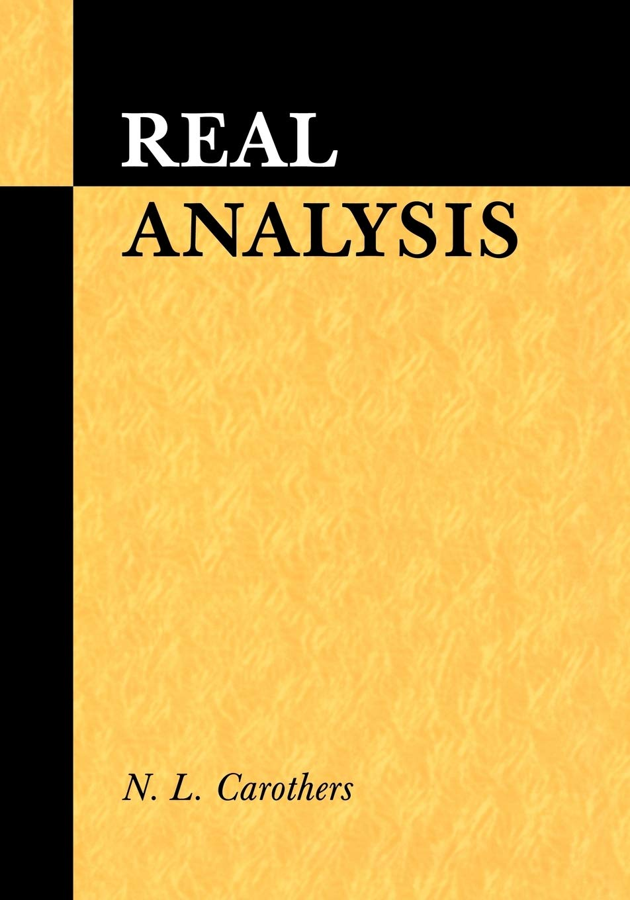
Real AnalysisMain
N. L. Carothers
Clear, well organized, and accessible for self-study. Covers metric and normed spaces, continuous function spaces, the Banach fixed-point theorem, Arzelà-Ascoli, Stone-Weierstrass, and Fourier series, with an introduction to measure and integration. Better motivated than Rudin, with a topic selection better suited to consolidating the foundation before advancing to measure theory, functional analysis, and abstract analysis.
Análise no RⁿComplementary (free)Free ↗
Roberto I. Oliveira
Though a course on analysis in Rⁿ, these notes also serve as a bridge to metric spaces: they cover topology and analysis in metric and vector spaces, continuous function spaces, the Banach fixed-point theorem, Arzelà-Ascoli, Stone-Weierstrass, and the Fréchet derivative. Use as a Brazilian complement between the intuition of Rⁿ and the abstraction of general metric spaces.
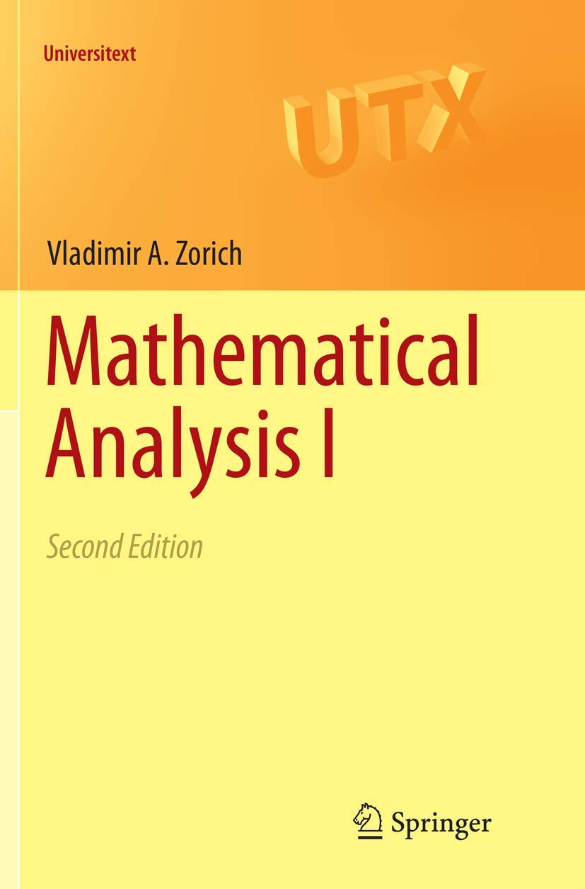
Mathematical AnalysisComplementary
Vladimir A. Zorich
A broad and sophisticated two-volume work with a very rich view of analysis. Here it functions best as a selective complement: ideal for deepening specific topics, consulting more refined proofs, and seeing connections that more direct texts do not explore. More ambitious than Carothers and less suited to linear self-study, but excellent for gaining maturity and a more structural perspective on analysis.
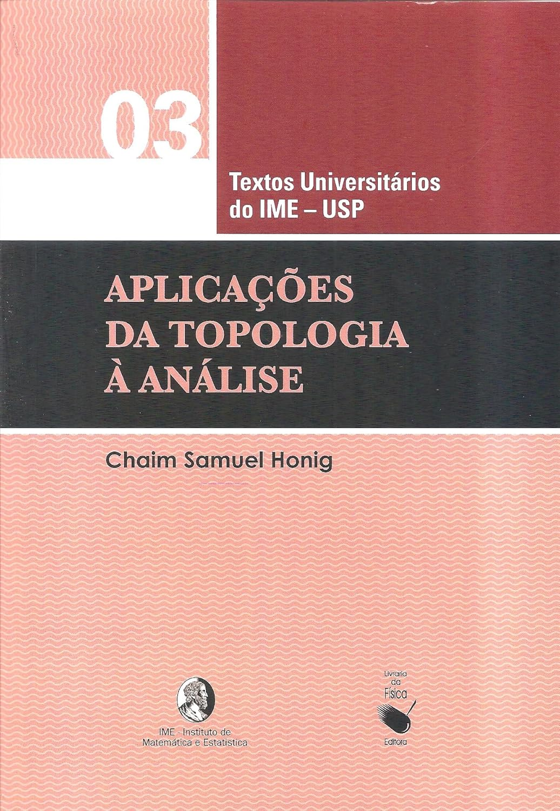
Aplicações da Topologia à AnáliseComplementary
Chaim Samuel Hönig
A national text connecting topology and analysis with elegance. A valuable read offering a different perspective on the material of the preceding phases.
What to Absorb
- Metric spaces and fundamental examples
- Sequences, convergence, and continuity
- Compactness and completeness
- Uniform continuity and function spaces
- Banach fixed-point theorem
- Arzelà-Ascoli and Stone-Weierstrass, at an introductory level
Minimum to Move On:mastery of metric spaces, convergence, continuity, compactness, and completeness, using Carothers as the main axis
Ready to Move On When:
- You can work with metric spaces, convergence, continuity, and completeness in non-trivial examples
- You understand compactness in metric spaces and can compare sequential compactness, open cover compactness, and concrete examples
- You can apply the Banach Fixed-Point Theorem in simple settings
- You recognize how function spaces arise naturally in analysis and why they require a more general language
- You understand the role of results like Arzelà-Ascoli and Stone-Weierstrass at a conceptual level, without needing to master all advanced versions
18
Undergraduate · Complete
Algebra II
Rings, groups, factorization, polynomials, and modules
📚 4 books: 1 main + 3 complementary
Phases 8 and 9 (Linear Algebra; Algebra I)
This phase consolidates a second pass through abstract algebra at the undergraduate level. The focus is on rings, ideals, domains, factorization, polynomials, groups, actions, Sylow theorems, solvable groups, and a first encounter with modules. It serves as a bridge between Algebra I and Fields and Galois Theory, and also better prepares the reader for Advanced Algebra, Commutative Algebra, and Algebraic Geometry. The intention is not yet to reach the encyclopedic depth of graduate algebra, but to acquire enough structural maturity to follow Galois and the later algebraic phases.
How to StudyUse Aluffi as the main text for the phase. The first pass should prioritize groups, rings, ideals, quotients, actions, polynomials, factorization, and a first notion of modules. Herstein is excellent for exercises and algebraic maturity, but more demanding; Garcia & Lequain works as a Brazilian reference close to a real Algebra II course; Artin should be used to deepen the connection with linear algebra and build structural intuition. Do not attempt to read all the complementary books in full: choose topics as gaps arise during the main study.
Books
Algebra: Notes from the UndergroundMain
Paolo Aluffi
Main text for the phase. A modern, well-written entry point more suited to self-study than many classic Algebra II texts. Use to consolidate groups, rings, homomorphisms, quotients, actions, polynomials, and the structural language that prepares Galois and later algebra. Paolo Aluffi is also the author of Algebra: Chapter 0, which appears further ahead in the Advanced Algebra phase; here, however, its role is to serve as a more accessible undergraduate text.
Topics in AlgebraComplementary
I. N. Herstein
A demanding classic of abstract algebra, with elegant treatment of groups, rings, fields, and extensions. Works very well as a complement for building maturity and solving real problems, but can feel drier than modern texts. Use selectively to reinforce proofs, examples, and exercises.
Elementos de ÁlgebraComplementary
Arnaldo Garcia e Yves Lequain
A Brazilian reference closely aligned with Algebra II courses. Covers rings, domains, unique factorization, polynomials, groups, Sylow, solvable groups, and finitely generated modules, with applications to Jordan canonical form. Valuable as a complement and reference, especially for reflecting the Brazilian algebra course tradition, but may be less friendly for a first self-study reading.
AlgebraComplementary
Michael Artin
An excellent conceptual complement, especially for the interaction between abstract algebra and linear algebra. Helps to understand groups, rings, modules, symmetries, representations, and canonical forms with a more matrix-based and geometric intuition. Does not by itself replace the systematic coverage of the phase, but greatly deepens structural understanding.
What to Absorb
- Rings, subrings, homomorphisms, and ideals
- Quotient rings
- Domains, fields, and divisibility
- Euclidean, principal, and factorial domains at an introductory level
- Polynomial rings
- Irreducibility and factorization
- Quotient groups and group actions
- Sylow theorems at an introductory level
- Solvable groups at an introductory level
- Initial notion of modules and their relation to linear algebra
Minimum to Move On:understanding rings, ideals, quotients, factorization, polynomials, group actions, Sylow at a basic level, and the idea of a module as a structural generalization of vector spaces
Ready to Move On When:
- You can work with rings, ideals, and quotients in basic examples
- You understand the distinction between Euclidean, principal, and factorial domains at an introductory level
- You can work with polynomials and apply simple irreducibility criteria
- You understand quotient groups, group actions, and the Sylow theorems in simple examples
- You recognize how modules generalize vector spaces
- You are prepared to study field extensions and Galois theory with greater algebraic maturity
19
Undergraduate · Complete
Fields and Galois Theory
The crowning of Algebra II · Exit point of the Undergraduate Track
📚 2 books: 1 main + 1 complementary
Phase 18 (Algebra II)
Where abstract algebra converges into one of the most elegant theories in mathematics. Field extensions, Galois groups, the fundamental theorem of Galois theory. And the definitive answer to a centuries-old question: why is there no general formula for degree-5 equations? Anyone who found Algebra I compelling will recognize themselves here.
How to StudyStewart is accessible and very well motivated, with rich historical context. Morandi is more rigorous and covers field theory with greater depth, making it a good complement for those who want extra solidity before entering advanced algebra.
Books
Galois TheoryMain
Ian Stewart
Accessible, well motivated, and with excellent historical context. Covers field extensions, Galois groups, and the fundamental theorem with clarity. Ideal for a first reading.
Fields and Galois TheoryComplementary
Patrick Morandi
More advanced and with broader coverage of field theory. A good complement to Stewart for those who want extra solidity before entering advanced algebra or algebraic geometry.
What to Absorb
- Field extensions: degree, algebraic and transcendental extensions
- Splitting field and normal extensions
- Galois group and its action
- Fundamental theorem of Galois theory
- Insolvability by radicals for degree ≥ 5
- Ruler-and-compass constructions
Minimum to Move On:the topics above via Stewart
Exit point of the Undergraduate Track. Ready when:
- You understand the statement and proof of the Fundamental Theorem of Galois Theory
- You can compute the Galois group of concrete extensions
- You understand why the symmetric group S₅ implies insolvability by radicals
Upon completing the Undergraduate Track
- Congratulations: you will have followed a path close to the core of a bachelor's degree in Mathematics.
- You will have a foundation in analysis, algebra, topology, geometry, differential equations, complex variables, metric spaces, advanced abstract algebra, and Galois theory.
- The final and structuring phases of the undergraduate path — Multivariable Analysis, Topology, Geometry of Curves and Surfaces, Metric Spaces, Algebra II, and Fields and Galois Theory — lay the ground for the Complete Track, giving you the analytic, topological, geometric, and algebraic maturity needed for the advanced topics ahead.
- If you want to continue into the Complete Track, the focus shifts to mathematical maturity: measure theory, functional analysis, operators, advanced geometry, and global structures.
↑ Back to phase map
Nota sobre a Trilha Completa
A Trilha Completa ainda pode ser usada para estudo independente, mas pressupõe um leitor matematicamente maduro: fim de graduação, mestrado, doutorado, ou maturidade equivalente. A intenção não é oferecer uma rota simples "do zero" para temas de pós-graduação, e sim indicar livros avançados que considero competentes para quem já está iniciado na matemática. Em muitas fases, o valor da curadoria está menos em prometer um percurso linear e mais em apontar referências que podem ser estudadas com autonomia, paciência e repertório. Minha área é análise funcional e teoria de operadores, portanto as fases mais próximas dessa direção refletem experiência direta; os livros das fases mais distantes foram escolhidos com base em conversas com quem os utilizou. Não busque fazer tudo: é impraticável e desnecessário. Entre com uma direção em mente.
Caminhos não lineares
Depois da Trilha Graduação, nem todo mundo precisa seguir a ordem completa de forma rígida. Quem gosta de análise pode priorizar medida, funcional e operadores. Quem gosta de geometria pode avançar por variedades, geometria diferencial e Riemanniana. Quem gosta de álgebra pode seguir por Galois, álgebra comutativa e geometria algébrica. Use a Trilha Completa como mapa de possibilidades, não como uma prisão.
20
Completa
Teoria da Medida e Integração
Indispensável para quem segue na matemática
📚 5 livros: 2 principais + 2 referência + 1 consulta
Fases 6 e 7 (Cálculo a Várias Variáveis; Análise na Reta)
A teoria da medida generaliza e rigoriza o conceito de integral muito além do que Riemann permite. A integral de Lebesgue é necessidade para Análise Funcional, Probabilidade e EDPs. Escolha um dos dois livros principais conforme o nível de detalhe que deseja: o Bartle é mais acessível, o Cohn é mais completo.
Como estudarO conceito central é a σ-álgebra. Entenda por que cada axioma é necessário através de contra-exemplos. Os três grandes teoremas de convergência (Monótona, Dominada, Fatou) devem ser entendidos profundamente: são usados em toda a análise avançada. O Bartle é uma boa entrada se o Cohn parecer denso no começo.
Livros
The Elements of Integration and Lebesgue MeasurePrincipal · mais acessível
Robert G. Bartle
Para self study, provavelmente o mais amigável de todos os livros de medida desta lista. Claro, bem motivado e com progressão cuidadosa. Cobre menos terreno que o Cohn, mas o que cobre, cobre muito bem. Boa entrada para quem quer chegar na integral de Lebesgue sem se perder no caminho.
Measure TheoryPrincipal · mais completo
Donald L. Cohn
Sólido, bem organizado e o livro que eu escolheria para uma primeira leitura séria em teoria da medida. Cobre medida abstrata, integral de Lebesgue, espaços Lᵖ e os teoremas de convergência com rigor e clareza.
Real AnalysisReferência
Elias Stein e Rami Shakarchi
Parte da série Princeton Lectures in Analysis. Elegante, com conexões ricas com Análise de Fourier e Equações Diferenciais Parciais. Excelente complemento.
Real AnalysisReferência
Gerald B. Folland
O mais completo e moderno dos quatro. Cobre teoria da medida, integração a Lebesgue, espaços Lᵖ, análise de Fourier, topologia, análise funcional e até probabilidade introdutória com notação contemporânea. Um livro de cabeceira para todo analista.
Real and Complex AnalysisConsulta
Walter Rudin
O "Papa Rudin", como é conhecido. Trata medida e integração junto com análise complexa num mesmo volume, com a elegância e concisão características de Rudin. Mais exigente que o Cohn e o Folland e com exercícios verdadeiramente desafiadores: use como consulta e leitura adicional após ter a teoria consolidada.
O que absorver
- σ-álgebras e espaços de medida
- Medida de Lebesgue em ℝⁿ
- Integral de Lebesgue e suas propriedades
- Teoremas de convergência: Monótona, Dominada, Fatou
- Espaços Lᵖ e desigualdades de Hölder e Minkowski
- Medidas produto e teorema de Fubini-Tonelli
Mínimo para avançar:os tópicos acima, usando o Bartle ou o Cohn como base de estudo
Pronto para avançar quando:
- Entende a diferença entre Riemann e Lebesgue e quando ela importa
- Aplica os três teoremas de convergência corretamente
- Trabalha com espaços Lᵖ e a desigualdade de Hölder
21
Completa
Teoria das Probabilidades
Probabilidade moderna como teoria da medida aplicada a eventos, variáveis aleatórias e convergência
📚 4 livros: 1 principal + 2 complementares + 1 avançado
Fase 20 (Teoria da Medida)
A probabilidade moderna pode ser vista como uma continuação natural da teoria da medida. Espaços de probabilidade, variáveis aleatórias, esperança, independência, modos de convergência e leis limite aparecem aqui em linguagem rigorosa. Esta fase não substitui a fase de Teoria da Medida: ela depende dela e a utiliza em um contexto probabilístico. Esta fase também não é sobre estatística aplicada, ciência de dados ou machine learning, mas sobre a base matemática da probabilidade.
Como estudarComece por Rosenthal: ele é a entrada mais adequada para uma primeira passagem rigorosa por probabilidade moderna após Teoria da Medida. O objetivo não é substituir o estudo de medida, nem transformar esta fase em estatística aplicada, mas consolidar a linguagem matemática da probabilidade. Billingsley pode ser usado para aprofundar a conexão entre probabilidade e medida e, para quem tiver muito interesse em probabilidade, pode inclusive servir como ponte para estudar os dois assuntos de forma integrada. Durrett amplia o repertório com exemplos e resultados centrais; Kallenberg deve ser tratado como referência avançada, não como obrigação de leitura.
Livros
A First Look at Rigorous Probability TheoryPrincipal
Jeffrey S. Rosenthal
Melhor porta de entrada para probabilidade rigorosa após Teoria da Medida. É relativamente curto, claro e adequado para self-study. Use como livro-base da fase, priorizando espaços de probabilidade, variáveis aleatórias, esperança, independência, convergência e leis limite.
Probability and MeasureComplementar
Patrick Billingsley
Clássico que aprofunda a relação entre probabilidade e teoria da medida. Mais exigente que Rosenthal, mas excelente para consolidar a formulação moderna da área. Pode ser usado seletivamente para ganhar maturidade em medida, distribuição, convergência e leis limite; para quem tiver muito interesse em probabilidade, também pode servir como ponte para estudar medida e probabilidade de forma integrada.
Probability: Theory and ExamplesComplementar
Rick Durrett
Texto amplo e robusto, com muitos exemplos e resultados centrais. Não precisa ser lido integralmente nesta fase. Funciona melhor como complemento para aprofundar tópicos específicos, especialmente convergência, independência, leis limite e processos estocásticos iniciais.
Foundations of Modern ProbabilityAvançado
Olav Kallenberg
Referência avançada e enciclopédica em probabilidade moderna. Não é leitura obrigatória neste ponto. Serve como indicação de aprofundamento para quem quiser seguir seriamente em probabilidade, processos estocásticos ou áreas próximas.
O que absorver
- Espaços de probabilidade e eventos
- Variáveis aleatórias como funções mensuráveis
- Distribuições e leis de variáveis aleatórias
- Esperança como integral
- Independência
- Modos de convergência de variáveis aleatórias
- Lema de Borel-Cantelli
- Lei dos Grandes Números
- Teorema Central do Limite em formulação básica
Mínimo para avançar:entender variáveis aleatórias como funções mensuráveis, esperança como integral, independência, os principais modos de convergência e as ideias centrais da Lei dos Grandes Números e do Teorema Central do Limite
Pronto para avançar quando:
- Consegue traduzir linguagem probabilística para linguagem de teoria da medida
- Entende variáveis aleatórias como funções mensuráveis
- Consegue calcular e manipular esperança como integral
- Distingue convergência quase certa, em probabilidade, em Lp e em distribuição
- Reconhece independência em exemplos e consegue usá-la em demonstrações básicas
- Entende o papel das leis limite na estrutura da probabilidade moderna
22
Completa
Análise Funcional
Álgebra Linear em dimensão infinita
📚 3 livros: 1 principal + 2 complementares
Fases 12, 17 e 20 (Topologia; Análise em Espaços Métricos; Teoria da Medida)
O estudo dos espaços vetoriais de dimensão infinita. Em dimensão finita a topologia é quase dispensável; em dimensão infinita ela é central. Disciplina exigente e elegante; faça sem pressa. O livro do Botelho é uma boa primeira passagem para quem quer construir a base de Análise Funcional antes de consultar textos mais especializados. Os exemplos vindos de espaços Lp e operadores em espaços de funções tornam a Teoria da Medida uma base importante para esta fase.
Como estudarUse o livro principal como base da primeira passagem pela fase. O objetivo inicial é consolidar espaços normados, espaços de Banach, espaços de Hilbert, operadores lineares contínuos, dualidade e teoremas fundamentais. A Teoria da Medida entra como pré-requisito porque muitos exemplos centrais vêm de espaços Lp e de operadores em espaços de funções. Helemskii é um complemento exigente e muito incomum: usa fortemente linguagem categórica, aborda teoria de operadores, análise harmônica e uma direção não comutativa que o autor chama de quantum functional analysis, sendo especialmente valioso para quem também se interessa por categorias. Van Neerven é mais tradicional, moderno e amplo, útil como referência para semigrupos, cálculo funcional, espaços de Sobolev e tópicos funcionais avançados. Use ambos seletivamente, sem transformar a fase em uma leitura enciclopédica.
Livros
Fundamentos de Análise FuncionalPrincipal
Geraldo Botelho, Daniel Pellegrino e Eduardo Teixeira (SBM)
Texto nacional de alto nível, recentemente publicado em inglês pela Springer e com recepção muito positiva, reforçando seu nível de excelência. Cobre espaços de Banach e Hilbert, operadores lineares limitados e os grandes teoremas da área com clareza e rigor, além de vários tópicos adicionais interessantes. Uma boa escolha para quem estuda sozinho.
Lectures and Exercises on Functional AnalysisComplementar
Alexander Ya. Helemskii
Complemento muito rico, exigente e nada usual em Análise Funcional. Helemskii utiliza pesadamente a linguagem das categorias, algo pouquíssimo comum em textos de análise, o que torna o livro especialmente valioso para quem também tem interesse em categorias e estruturas abstratas. O livro também aborda teoria de operadores, análise harmônica e aquilo que o autor chama de quantum functional analysis: uma perspectiva funcional-analítica voltada a estruturas não comutativas e espaços operatoriais que generalizam aspectos da análise funcional clássica. É singular, mas não é a melhor primeira leitura da fase, principalmente pelo uso categórico intenso.
Functional AnalysisComplementar
Jan van Neerven
Referência moderna, tradicional e bastante ampla em Análise Funcional. Van Neerven oferece uma rota organizada por espaços de Banach e Hilbert, operadores lineares, dualidade, cálculo funcional, semigrupos, espaços de Sobolev e exemplos ligados a espaços de funções. É mais próximo da tradição analítica padrão do que Helemskii, mas também é enciclopédico e exigente; deve ser usado principalmente como complementar ou referência seletiva, não como leitura linear obrigatória.
O que absorver
- Espaços normados e de Banach
- Espaços de Hilbert: ortogonalidade, bases de Schauder
- Operadores lineares limitados e o espaço dual
- Teorema de Hahn-Banach e suas consequências
- Teorema da aplicação aberta e do gráfico fechado
- Princípio da limitação uniforme
- Espectro de operadores lineares
Mínimo para avançar:entender espaços normados, Banach e Hilbert; operadores lineares contínuos; dualidade básica; Hahn-Banach, Banach-Steinhaus, aplicação aberta e gráfico fechado em nível operacional; e exemplos fundamentais como ℓᵖ, Lᵖ, C(K) e espaços de Hilbert separáveis
Pronto para avançar quando:
- Consegue reconhecer e trabalhar com exemplos básicos de espaços de Banach e Hilbert
- Entende o papel da completude e por que ela é decisiva em análise funcional
- Consegue usar dualidade básica e funcionais lineares contínuos em exemplos simples
- Entende, ao menos operacionalmente, Hahn-Banach, Banach-Steinhaus, aplicação aberta e gráfico fechado
- Consegue interpretar operadores lineares contínuos como objetos centrais da teoria
23
Completa
Teoria de Operadores
Aprofundamento natural após Análise Funcional
📚 3 livros: 1 principal + 1 complementar + 1 referência
Fase 22 (Análise Funcional)
Teoria de Operadores é o estudo aprofundado de operadores lineares em espaços de Hilbert e Banach: C*-álgebras, espectro, operadores compactos, teoria espectral. É a área onde Análise Funcional atinge sua forma mais desenvolvida e onde se conecta com física matemática, teoria de representações e K-teoria.
Como estudarO Murphy é o texto principal, auto-contido, bem escrito e com rigor adequado para self study. Abramovich & Aliprantis e Barry Simon entram como complementares e referência. O Simon em particular é uma obra monumental em vários volumes, não para leitura linear, mas para consulta profunda.
Livros
C*-Algebras and Operator TheoryPrincipal
Gerard J. Murphy
O texto de entrada mais equilibrado que conheço para teoria de operadores e C*-álgebras. Auto-contido, bem escrito e com o nível certo para uma primeira leitura séria. Cobre C*-álgebras, o teorema espectral e operadores compactos sem economizar no rigor.
Introduction to Operator TheoryComplementar
Yuri Abramovich e Charalambos Aliprantis
Complementar ao Murphy, com foco em operadores em espaços de Banach e Banach lattices. Amplia bem a perspectiva para quem quer ir além do Murphy sem trocar completamente de direção.
Operator Theory (4 vols.)Consulta
Barry Simon
Obra monumental e enciclopédica. Não é para leitura linear. É a referência permanente da área, com cobertura vastíssima de teoria espectral, operadores de Schrödinger e conexões com física matemática. Consulte conforme os interesses de pesquisa.
O que absorver
- C*-álgebras: definição, exemplos e morfismos
- Teorema de Gelfand-Naimark
- Teorema espectral para operadores normais
- Operadores compactos e decomposição espectral
- Índice de Fredholm e operadores de Fredholm
Mínimo para avançar:os tópicos acima pelo Murphy. Simon e Abramovich & Aliprantis são aprofundamento e consulta
Pronto para avançar quando:
- Entende a estrutura de uma C*-álgebra e sabe dar exemplos concretos
- Consegue enunciar e aplicar o teorema de Gelfand-Naimark
- Domina o teorema espectral para operadores normais em espaços de Hilbert
- Entende operadores compactos e sua relação com dimensão finita
24
Completa
Análise Complexa Avançada
Aprofundamento natural após Medida e Funcional
📚 5 livros: 1 principal + 2 complementares + 2 consulta
Fases 12 e 13 (Topologia; Variável Complexa)
Retorno à Análise Complexa com maturidade acumulada. Resultados mais profundos: convergência normal, famílias normais, o Teorema de Riemann sobre mapeamento, produtos infinitos e as primeiras ideias sobre superfícies de Riemann.
Como estudarConway continua sendo o melhor ponto de entrada: é claro, robusto e bom para self study. Remmert entra como alternativa mais elegante e conceitual. Ahlfors é o clássico absoluto da área, denso e exigente, melhor como leitura lenta ou consulta madura. Freitag & Busam amplia o horizonte com tópicos adicionais, incluindo conexões com teoria analítica dos números. Berenstein & Gay fica como consulta avançada: belíssimo, mas bastante exigente.
Livros
Functions of One Complex Variable IPrincipal
John B. Conway
Mais amigável que o Ahlfors sem abrir mão do rigor. Cobre a teoria clássica de análise complexa com clareza e progressão bem calibrada para self study. Uma boa escolha para quem quer construir a base antes de mergulhar no Ahlfors.
Theory of Complex FunctionsComplementar
Reinhold Remmert
Uma alternativa elegante ao Conway, com o refinamento e o formalismo característicos da tradição alemã. É um texto belíssimo de variável complexa: rigoroso, estrutural, geometricamente intuitivo e matematicamente maduro.
Complex AnalysisComplementar
Freitag e Busam
Alternativa europeia com cobertura ampla e bom equilíbrio entre teoria e exemplos. Além da teoria clássica de funções holomorfas, aborda tópicos de teoria analítica dos números, o que pode ser especialmente interessante para quem gosta de álgebra e teoria dos números.
Complex AnalysisConsulta
Lars Ahlfors
O clássico da Análise Complexa. Denso, elegante, exigente. Uma segunda leitura com o Ahlfors depois do Conway é muito produtiva: ele revela camadas que o primeiro contato não alcança.
Complex Variables: An IntroductionConsulta
Carlos A. Berenstein e Roger Gay
Como um Ahlfors em esteroides: extremamente rigoroso, moderno e denso, provavelmente o texto mais avançado desta lista em análise complexa, e um dos mais avançados de todo o roadmap. Conecta resultados da análise complexa com teoria da medida e análise funcional, topologia algébrica, teoria do índice e afins. Não é para primeira leitura; pressupõe domínio do Conway e do Ahlfors. Extremamente belo, porém brutal.
O que absorver
- Convergência normal e compacidade em espaços de funções analíticas
- Teorema de Montel e famílias normais
- Teorema de Riemann sobre mapeamento conforme
- Produto de Weierstrass para funções inteiras
- Funções meromorfas e teorema de Mittag-Leffler
- Introdução às superfícies de Riemann
Mínimo para avançar:os tópicos acima pelo Conway.
Pronto para avançar quando:
- Trabalha com convergência normal e famílias normais (Teorema de Montel)
- Entende o Teorema de Riemann sobre mapeamento
- Conhece o produto de Weierstrass para funções inteiras
25
Completa
Mecânica Quântica Matemática
Aplicação natural da Análise Funcional
📚 1 livro
Fase 22 (Análise Funcional)
A mecânica quântica, formulada matematicamente, é essencialmente teoria de operadores em espaços de Hilbert. O que foi estudado em Análise Funcional ganha aqui uma aplicação profunda e inesperadamente motivadora.
Livros
Quantum Theory for MathematiciansPrincipal
Brian C. Hall
O melhor livro de mecânica quântica escrito para matemáticos. Rigoroso, auto-contido e muito bem motivado. Apresenta a teoria sem sacrificar a precisão matemática. Pressupõe Análise Funcional e um pouco de Geometria Diferencial.
Como estudarUse Hall como referência central: ele é provavelmente uma das melhores entradas para matemáticos, pois introduz a mecânica quântica com cuidado conceitual e desenvolve a análise funcional necessária junto do conteúdo físico. Não tente ler todos os capítulos com o mesmo peso. O núcleo da fase é: formalismo em espaços de Hilbert, equação de Schrödinger, operadores autoadjuntos, teorema espectral, exemplos unidimensionais e simetrias básicas. Capítulos sobre WKB, integral de caminho, quantização geométrica ou tópicos mais físicos podem ser lidos seletivamente.
O que absorver
- Formalismo de estados, observáveis e evolução temporal em espaços de Hilbert
- Equação de Schrödinger livre e primeiros exemplos unidimensionais
- Operadores simétricos, autoadjuntos e essencialmente autoadjuntos em exemplos fundamentais
- Diferença entre operadores limitados e não limitados
- Teorema espectral para operadores autoadjuntos em nível conceitual e operacional
- Hamiltonianos simples: partícula livre, poço de potencial e oscilador harmônico
- Princípio da incerteza e relações de comutação canônicas
- Ideia do teorema de Stone e da evolução unitária
- Papel de simetrias, grupos de Lie e representações em exemplos básicos
Mínimo para avançar:entender o formalismo de Hilbert, a equação de Schrödinger em exemplos simples, operadores autoadjuntos não limitados, espectro, evolução unitária e o papel das relações de comutação canônicas, sem precisar dominar WKB, integrais de caminho ou quantização geométrica
Pronto para avançar quando:
- Consegue explicar a diferença entre estado, observável, Hamiltoniano e evolução temporal
- Entende por que observáveis são modelados por operadores autoadjuntos
- Consegue trabalhar conceitualmente com operadores não limitados e seus domínios em exemplos simples
- Reconhece como o teorema espectral justifica a medição de observáveis
- Consegue relacionar o operador de Schrödinger, espectro e evolução unitária em exemplos básicos
- Entende a motivação matemática das relações de comutação canônicas e do teorema de Stone–von Neumann em nível introdutório
26
Completa
EDO Avançada e Sistemas Dinâmicos
Fluxos, estabilidade, linearização e dinâmica qualitativa
📚 4 livros: 1 principal + 3 complementares
Fases 15 e 17 (Equações Diferenciais Ordinárias; Análise em Espaços Métricos)
Esta fase aprofunda a passagem de equações diferenciais ordinárias para sistemas dinâmicos. O foco deixa de ser apenas resolver equações e passa a ser entender o comportamento qualitativo das soluções: fluxos, campos vetoriais, estabilidade, linearização, retratos de fase, sistemas autônomos e bifurcações iniciais. A fase pressupõe familiaridade com EDOs básicas e com a linguagem de espaços métricos, especialmente convergência, continuidade, completude, compacidade e pontos fixos. Ela não exige Fourier/EDP, probabilidade ou análise funcional como pré-requisitos formais.
Como estudarUse Teschl como livro-base da fase. A primeira passagem deve priorizar existência e unicidade em nível mais maduro, fluxos, sistemas autônomos, estabilidade, linearização, retratos de fase e bifurcações iniciais. O uso ocasional de Mathematica no Teschl deve ser entendido como apoio visual ou computacional, não como parte obrigatória do estudo. Sotomayor, Palis & de Melo e Perko são complementos fortes e exigentes: use-os seletivamente para aprofundar pontos específicos, não como obrigação de leitura integral.
Livros
Ordinary Differential Equations and Dynamical SystemsPrincipal
Gerald Teschl
Livro principal da fase. É moderno, organizado e adequado para self-study, conectando EDOs, fluxos, estabilidade, sistemas autônomos e dinâmica qualitativa. O autor às vezes utiliza Mathematica em exemplos ou ilustrações, mas isso deve ser entendido como apoio computacional, não como requisito: o núcleo matemático pode ser estudado com lápis, papel e, se desejado, com Python ou outro software.
Lições de Equações Diferenciais OrdináriasComplementar
Jorge Sotomayor
Referência brasileira clássica para EDOs com abordagem matemática séria. É um livro exigente, mais adequado para aprofundar a teoria depois de uma primeira passagem pelo Teschl. Excelente para reforçar existência, unicidade, dependência contínua, estabilidade e aspectos qualitativos das soluções.
Introdução aos Sistemas DinâmicosComplementar
Jacob Palis Jr. e Welington de Melo
Texto brasileiro fundamental para entrar em sistemas dinâmicos com mais estrutura matemática. É mais exigente e menos introdutório do que o Teschl em vários pontos, por isso funciona melhor como aprofundamento seletivo. Complementa a fase ao desenvolver a linguagem de dinâmica, estabilidade, recorrência inicial e comportamento qualitativo com uma perspectiva mais geométrica e global.
Differential Equations and Dynamical SystemsComplementar
Lawrence Perko
Complemento forte para dinâmica não linear, sistemas planares, estabilidade, bifurcações e teoria qualitativa. Também é um livro denso, mais apropriado para consulta e aprofundamento seletivo do que para leitura linear completa nesta fase.
O que absorver
- Teoremas de existência e unicidade em formulação mais madura
- Dependência contínua das soluções
- Fluxos associados a campos vetoriais
- Sistemas autônomos
- Pontos de equilíbrio
- Estabilidade e estabilidade assintótica
- Linearização
- Retratos de fase
- Órbitas e conjuntos invariantes
- Bifurcações iniciais
Mínimo para avançar:entender fluxos de EDOs, estabilidade de equilíbrios, linearização, retratos de fase e a ideia de estudar qualitativamente o comportamento das soluções sem depender de fórmulas explícitas
Pronto para avançar quando:
- Consegue interpretar uma EDO autônoma como um sistema dinâmico
- Entende o conceito de fluxo associado a um campo vetorial
- Consegue analisar estabilidade de pontos de equilíbrio em exemplos básicos
- Usa linearização para estudar o comportamento local das soluções
- Consegue desenhar e interpretar retratos de fase simples
- Reconhece bifurcações iniciais e mudanças qualitativas no comportamento dinâmico
27
Completa
EDP Avançada
Distribuições, soluções fracas, Sobolev, energia e métodos variacionais
📚 4 livros: 2 principais + 2 complementares
Fases 16 e 22 (Análise de Fourier e EDP Elementar; Análise Funcional)
Esta fase retoma as equações diferenciais parciais clássicas em uma linguagem mais moderna. O foco passa de métodos elementares, como separação de variáveis e séries de Fourier, para distribuições, derivadas fracas, soluções fracas, transformada de Fourier em EDP, estimativas de energia, problemas de fronteira, dualidade, formulações variacionais e uma primeira entrada em espaços de Sobolev. Vasy organiza a primeira passagem de forma mais acessível e guiada, enquanto Evans funciona como principal avançado e referência clássica para aprofundar a teoria padrão de soluções fracas, Sobolev, regularidade e problemas elípticos, parabólicos e hiperbólicos. A Teoria da Medida entra indiretamente pelo caminho até Análise Funcional, especialmente por causa dos espaços Lp e dos espaços de funções. Teoria de Operadores, Probabilidade e EDO Avançada ajudam em direções específicas, mas não são pré-requisitos formais.
Como estudarUse Vasy como livro-base para organizar a primeira passagem pela fase. O objetivo inicial é entender distribuições, derivadas fracas, transformada de Fourier em EDP, estimativas de energia, problemas de fronteira, dualidade, formulações variacionais e o primeiro contato com espaços de Sobolev. Evans deve entrar como principal avançado: use-o para aprofundar os tópicos centrais, especialmente Sobolev, soluções fracas, métodos variacionais, regularidade e equações elípticas, parabólicas e hiperbólicas. Folland é útil para uma abordagem mais concisa e analítica; Jost oferece uma rota complementar com conexão com análise geométrica e métodos variacionais. Não tente dominar toda a teoria de EDP de uma vez: o objetivo é sair da fase entendendo a linguagem moderna básica da área e ficando preparado para consultar Evans com maturidade.
Livros
Partial Differential Equations: An Accessible Route Through Theory and ApplicationsPrincipal
András Vasy
Principal mais leve e acessível da fase. Vasy oferece uma rota moderna para EDP com menos pré-requisitos do que Evans ou Folland, introduzindo distribuições cedo e conduzindo o leitor por equações de primeira ordem, equações lineares clássicas, Fourier, fronteiras, Duhamel, separação de variáveis, espaços com produto interno, dualidade e problemas variacionais. Use como livro-base para construir a ponte entre a EDP elementar e a teoria avançada.
Partial Differential EquationsPrincipal
Lawrence C. Evans
Principal avançado e referência clássica central da fase. Evans é mais denso e exigente que Vasy, mas aprofunda a linguagem padrão da área: espaços de Sobolev, soluções fracas, métodos variacionais, regularidade e equações elípticas, parabólicas e hiperbólicas. Use para consolidar e aprofundar os temas que Vasy introduz, sem tratá-lo como leitura obrigatória de capa a capa na primeira passagem.
Introduction to Partial Differential EquationsComplementar
Gerald B. Folland
Complemento conciso e analítico para EDP. É útil para rever e consolidar os fundamentos com uma abordagem mais direta, especialmente em equações lineares, distribuições, transformada de Fourier e métodos clássicos. Funciona bem como segunda perspectiva para leitores que querem uma rota mais enxuta.
Partial Differential EquationsComplementar
Jürgen Jost
Complemento com boa conexão com análise geométrica e métodos variacionais. É útil para quem deseja enxergar EDP dentro de um panorama mais amplo envolvendo análise, geometria e problemas não lineares. Pode ser usado seletivamente, especialmente depois de ganhar alguma familiaridade com a linguagem básica de Sobolev, soluções fracas e estimativas de energia.
O que absorver
- Formulações clássicas e fracas de EDP
- Distribuições e derivadas fracas
- Transformada de Fourier em EDP
- Espaços Lp como base para espaços de funções
- Primeiro contato com espaços de Sobolev e normas de energia
- Métodos de energia
- Problemas de fronteira
- Dualidade e solvabilidade em nível inicial
- Formulações variacionais
- Problemas elípticos básicos
- Problemas parabólicos básicos
- Problemas hiperbólicos básicos
- Noções iniciais de regularidade
Mínimo para avançar:entender a diferença entre solução clássica e solução fraca, saber o papel de distribuições e derivadas fracas, reconhecer espaços de Sobolev em nível inicial, compreender métodos de energia e formulações variacionais, e distinguir equações elípticas, parabólicas e hiperbólicas
Pronto para avançar quando:
- Consegue explicar por que soluções fracas são necessárias em EDP
- Entende distribuições e derivadas fracas em exemplos básicos
- Reconhece como a transformada de Fourier aparece em problemas de EDP
- Entende o papel inicial dos espaços de Sobolev e normas de energia
- Reconhece como métodos de energia controlam soluções
- Consegue distinguir problemas elípticos, parabólicos e hiperbólicos
- Entende a função das formulações variacionais em problemas de EDP
- Está preparado para consultar Evans com mais maturidade e para encontrar EDP em análise geométrica, física matemática, teoria espectral e problemas variacionais
28
Completa
Álgebra Avançada
Álgebra abstrata por uma abordagem categórica
📚 1 livro
Fase 18 (Álgebra II)
Como estudarUse o Aluffi como uma segunda passagem pela álgebra abstrata, agora em nível mais estrutural. A prioridade não é ler o livro inteiro, mas entender como a linguagem categórica reorganiza objetos já conhecidos: grupos, anéis, módulos, homomorfismos, quocientes, produtos, propriedades universais e sequências exatas. Dê atenção especial a módulos, produtos tensoriais, álgebra multilinear e aos primeiros contatos com álgebra homológica, mas sem reduzir a fase a uma preparação para Álgebra Comutativa. O valor do livro está justamente em mostrar a álgebra como uma rede de construções universais e ideias recorrentes.
Esta fase é um retorno à álgebra abstrata de um ponto de vista mais avançado, unificador e categórico. Depois da Álgebra II, o objetivo não é apenas acumular novos tópicos, mas reorganizar grupos, anéis, módulos, produtos universais, tensores, álgebras e construções homológicas dentro de uma linguagem estrutural mais madura. O Aluffi deve ser usado como mapa amplo da álgebra moderna: categorias aparecem como linguagem organizadora, não como um apêndice isolado. A fase prepara Álgebra Comutativa e Geometria Algébrica, mas também abre portas para representações, álgebra homológica, teoria de categorias e outras direções algébricas.
Livros
Algebra: Chapter 0Principal
Paolo Aluffi
Livro principal da fase. É uma abordagem moderna, ampla e categórica da álgebra abstrata, introduzindo categorias desde cedo como linguagem unificadora. Não deve ser tratado como uma lista de tópicos a completar, mas como uma segunda leitura estrutural da álgebra: grupos, anéis, módulos, propriedades universais, tensores, álgebras e noções homológicas aparecem dentro de uma mesma arquitetura conceitual. É muito bem escrito e rico em prosa matemática, mas enciclopédico; use seletivamente e com objetivos claros.
O que absorver
- A linguagem categórica como forma de organizar a álgebra, sem perder contato com exemplos concretos
- Propriedades universais em construções básicas: produtos, coprodutos, quocientes, objetos livres e objetos iniciais/finais
- Grupos revisitados estruturalmente: homomorfismos, quocientes, ações, produtos, grupos livres, Sylow e decomposições
- Anéis e módulos como ampliação natural da álgebra linear, incluindo ideais, quocientes, módulos livres e apresentações
- Fatoração em domínios: UFDs, PIDs, domínios euclidianos, polinômios e exemplos aritméticos
- Álgebra linear em linguagem algébrica: módulos livres, determinantes, formas canônicas e ações de anéis de polinômios
- Corpos e extensões: extensões algébricas, corpos finitos, construções clássicas e uma retomada de Galois
- Funtores, equivalências, limites, colimites e adjunções em nível operacional
- Produtos tensoriais, mudança de base, Hom, dualidade e álgebra multilinear
- Primeiro contato com complexos, homologia, Tor, Ext, categorias abelianas e categorias derivadas em nível panorâmico
Mínimo para avançar:entender como categorias e propriedades universais organizam construções algébricas recorrentes; conseguir transitar entre grupos, anéis, módulos, corpos e álgebra linear em linguagem estrutural; e reconhecer tensores, Hom, sequências exatas e noções homológicas como ferramentas que reaparecem em álgebra, topologia e geometria
Pronto para avançar quando:
- Consegue explicar propriedades universais em exemplos concretos, como produtos, quocientes, objetos livres e produtos tensoriais
- Entende categorias e funtores como linguagem organizadora, não como formalismo decorativo
- Consegue reconhecer a mesma estrutura algébrica aparecendo em grupos, anéis, módulos, espaços vetoriais e corpos
- Trabalha com grupos, ações, quocientes, anéis, ideais, módulos e extensões de corpos sem depender apenas de receitas isoladas
- Entende produtos tensoriais, Hom e dualidade como construções universais, pelo menos em exemplos básicos
- Reconhece sequências exatas, complexos, homologia, Tor e Ext como a entrada para álgebra homológica, sem precisar dominar categorias derivadas
- Percebe por que o Aluffi funciona como ponte para álgebra comutativa, geometria algébrica, topologia algébrica, representações e teoria de categorias
29
Completa
Geometria Diferencial
Da geometria clássica às conexões e curvatura
📚 4 livros: 2 principais + 1 complementar + 1 referência
Fases 11 e 14 (Análise em Várias Variáveis; Geometria Diferencial de Curvas e Superfícies)
Esta fase aprofunda a geometria diferencial a partir de uma base concreta: análise em várias variáveis, parametrizações, subvariedades euclidianas, curvas e superfícies. O objetivo é avançar da intuição geométrica clássica para uma linguagem mais moderna de campos, formas, conexões e curvatura. Kühnel e Prasolov servem como entrada geométrica e motivadora; Tu entra como segundo momento, organizando a geometria diferencial em variedades por meio de conexões, curvatura e classes características.
Como estudarComece por Kühnel como guia geométrico, usando Prasolov em paralelo para exemplos, motivação e exercícios resolvidos. A fase pode ser iniciada após Análise em Várias Variáveis e Curvas e Superfícies, pois essa base já dá familiaridade com parametrizações, subvariedades euclidianas e curvatura. Para a parte moderna em variedades, avance para Tu depois de estudar Variedades Diferenciáveis ou em paralelo com ela. Jeffrey Lee fica como referência ampla para consulta, não como leitura linear obrigatória.
Livros
Differential Geometry: Curves - Surfaces - ManifoldsPrincipal
Wolfgang Kühnel
Entrada geométrica mais natural para esta fase. Faz a transição de curvas e superfícies para variedades mantendo forte intuição visual, muitos exemplos e uma progressão menos abrupta do que textos mais abstratos. É uma boa porta de entrada antes de avançar para conexões, curvatura e classes características em linguagem moderna.
Differential Geometry: Connections, Curvature, and Characteristic ClassesPrincipal
Loring W. Tu
Texto principal para a linguagem moderna da geometria diferencial em variedades. Desenvolve conexões, curvatura e classes características com excelente organização. Não precisa ser o primeiro livro da fase: funciona melhor depois de alguma familiaridade geométrica com Kühnel ou Prasolov e, idealmente, após ou em paralelo com Variedades Diferenciáveis. Também serve como ponte para Chern-Weil, topologia diferencial e geometria global.
Differential GeometryComplementar
Viktor V. Prasolov
Texto curto, motivador e bastante amigável para consolidar a intuição geométrica. Traz exemplos e soluções de exercícios, o que o torna especialmente útil para estudo autodidata. Funciona muito bem como apoio paralelo, sem substituir os livros principais da fase.
Manifolds and Differential GeometryReferência
Jeffrey M. Lee
Referência ampla e robusta para variedades e geometria diferencial. É mais extenso do que o necessário para uma primeira passagem, mas excelente para consulta, aprofundamento e conexão entre os vários tópicos da fase.
O que absorver
- Passagem de curvas e superfícies para variedades
- Subvariedades euclidianas e exemplos geométricos
- Campos vetoriais e formas diferenciais em contexto geométrico
- Fibrados tangente e cotangente em exemplos concretos
- Conexões e derivada covariante
- Curvatura de uma conexão
- Primeiras ideias de classes características
- Intuição geométrica para exemplos fundamentais
Mínimo para avançar:entender a passagem da geometria clássica de curvas e superfícies para variedades, saber interpretar campos, formas, conexões e curvatura em exemplos fundamentais, e reconhecer o papel geométrico de conexões sem precisar dominar classes características em profundidade
Pronto para avançar quando:
- Consegue relacionar exemplos de curvas e superfícies com a linguagem mais geral de variedades
- Entende campos vetoriais, formas diferenciais e fibrados tangente/cotangente em exemplos concretos
- Consegue explicar a ideia de conexão como forma de derivar campos ao longo de direções
- Reconhece curvatura como obstrução geométrica à trivialidade local de uma conexão
- Entende por que Tu entra como segundo momento moderno, não como ponto de partida obrigatório
30
Completa
Variedades Diferenciáveis
O framework moderno da geometria e da física matemática
📚 4 livros: 1 principal + 1 referência + 2 complementares
Fase 12 (Topologia); Fase 29 recomendada como apoio geométrico
Contato com as variedades abstratas, espaços que localmente se parecem com ℝⁿ, mas podem ter topologia global complexa. O ambiente natural da física teórica, da geometria moderna e da topologia diferencial. O Tu é mais amigável para self study; o John M. Lee é a referência completa.
Como estudarUse Tu como primeira leitura para construir a linguagem básica de variedades diferenciáveis, formas diferenciais e cohomologia de de Rham com boa progressão. Lee funciona como referência ampla e moderna para consulta, especialmente quando precisar de mais detalhes técnicos. Conlon deve entrar como complementar avançado: é mais exigente e mais focado, aprofunda álgebra tensorial, formas, integração, Stokes e de Rham com mais densidade. Jänich pode ser usado como ponte geométrica entre cálculo vetorial, formas diferenciais e a linguagem abstrata de variedades.
Livros
An Introduction to ManifoldsPrincipal
Loring W. Tu
Mais acessível e auto-contido que o Lee, com progressão cuidadosa e exemplos ricos. É a primeira escolha para quem aprende o assunto sozinho. Raramente um livro técnico combina tão bem rigor e clareza.
Differentiable ManifoldsComplementar
Lawrence Conlon
Complementar avançado da fase. É provavelmente o texto mais profundo entre os livros deste bloco: trata variedades diferenciáveis com rigor, desenvolve álgebra tensorial, álgebra exterior e teoria de formas em nível mais substancial que Tu, Lee e Jänich, e avança até integração de formas, teorema de Stokes, homologia singular, sequências exatas, Mayer–Vietoris e cohomologia de de Rham. Também inclui fluxos, folheações, grupos de Lie, uma introdução à geometria riemanniana e fibrados principais. Use depois de Tu ou em paralelo com Lee, especialmente se quiser uma rota mais focada e profunda para formas diferenciais, integração em cadeias e de Rham, sem entrar no caráter mais enciclopédico do Lee.
Vector AnalysisComplementar
Klaus Jänich
Jänich é uma excelente ponte entre a análise em várias variáveis da Fase 10, formas diferenciais e variedades abstratas. Geométrico, visual e conceitualmente claro, ajuda a conectar a linguagem clássica do cálculo vetorial com a linguagem moderna das formas. Carrega bem a marca da escola alemã: rigoroso e cuidadosamente estruturado, sem abrir mão da intuição geométrica. É um livro menos conhecido do que deveria, especialmente pela forma como conecta intuição geométrica, cálculo vetorial e formas diferenciais.
Introduction to Smooth ManifoldsReferência
John M. Lee
A referência moderna e completa de variedades suaves. Cobre todo o maquinário: fibrados, conexões, métricas riemannianas, formas diferenciais, cohomologia de De Rham, com rigor e profundidade enciclopédicos. Use como consulta enquanto estuda o Tu.
O que absorver
- Variedades diferenciáveis: atlas, cartas, estrutura suave
- Fibrado tangente e cotangente, campos vetoriais e fluxos
- Subvariedades e teorema da função implícita em variedades
- Formas diferenciais e operador exterior
- Orientação e integração em variedades
- Teorema de Stokes em variedades
Mínimo para avançar:os tópicos acima pelo Tu
Pronto para avançar quando:
- Constrói exemplos de variedades com atlas explícito
- Trabalha com fibrado tangente e formas diferenciais com conforto
- Entende o Teorema de Stokes como resultado unificador em variedades
31
Completa
Geometria Riemanniana
Métricas, geodésicas e curvatura
📚 3 livros: 1 principal + 1 complementar + 1 referência
Fase 30 (Variedades Diferenciáveis)
Esta fase estuda variedades suaves equipadas com uma métrica Riemanniana. A partir daí, passam a fazer sentido noções geométricas como comprimento, ângulo, volume, geodésicas, conexão de Levi-Civita e curvaturas métricas. A fase anterior de Geometria Diferencial e esta fase não são redundantes: a primeira organiza a linguagem geral de campos, formas, fibrados, conexões e curvatura; esta fase estuda o caso especial, mas central, em que a variedade possui uma métrica, permitindo medir, comparar, curvar e estudar globalmente os espaços diferenciáveis.
Como estudarUse Lee como referência central: métricas, conexão de Levi-Civita, geodésicas e curvatura devem ficar claros em exemplos fundamentais. A fase de Geometria Diferencial anterior é altamente recomendada, pois ajuda na intuição sobre conexões e curvatura, mas o pré-requisito essencial é a linguagem de Variedades Diferenciáveis. Godinho e Natário podem ser usados como apoio mais acessível e motivador, especialmente para ver aplicações geométricas e físicas. Jost entra apenas como referência avançada para consulta seletiva, sobretudo para quem quiser se aproximar de análise geométrica.
Livros
Riemannian Manifolds: An Introduction to CurvaturePrincipal
John M. Lee
Texto principal da fase. Apresenta métricas Riemannianas, conexão de Levi-Civita, geodésicas e curvatura com clareza, rigor e boa progressão. Deve ser o eixo para entender a geometria métrica em variedades.
An Introduction to Riemannian Geometry: With Applications to Mechanics and RelativityComplementar
Leonor Godinho and José Natário
Complemento acessível e muito útil, com abordagem amigável e motivada por exemplos. Ajuda a reforçar métricas, geodésicas, curvatura e aplicações geométricas, servindo como apoio para quem quer uma entrada menos pesada antes ou durante o estudo pelo Lee. Também apresenta conexões interessantes com a Física, especialmente Mecânica e Relatividade.
Riemannian Geometry and Geometric AnalysisReferência
Jürgen Jost
Referência avançada para consulta seletiva. É mais exigente e analítico, cobrindo geometria Riemanniana com temas de análise geométrica. Não deve ser tratado como leitura obrigatória linear nesta fase, mas como aprofundamento para quem quiser ir além.
O que absorver
- Métricas Riemannianas
- Conexão de Levi-Civita
- Derivada covariante
- Geodésicas e transporte paralelo
- Curvatura seccional
- Curvatura de Ricci e curvatura escalar em nível introdutório
- Exemplos fundamentais: espaços euclidianos, esfera, toro e variedades de baixa dimensão
- Primeiras ideias de geometria global, quando apropriado
Mínimo para avançar:entender métricas Riemannianas, conexão de Levi-Civita, geodésicas, transporte paralelo e curvaturas seccional, de Ricci e escalar em exemplos fundamentais, sem precisar dominar comparação, teoremas globais ou análise geométrica avançada
Pronto para avançar quando:
- Consegue explicar como uma métrica Riemanniana permite medir comprimentos, ângulos e volumes
- Entende a conexão de Levi-Civita como conexão compatível com a métrica e sem torção
- Consegue trabalhar com geodésicas e transporte paralelo em exemplos básicos
- Reconhece as diferenças entre curvatura seccional, de Ricci e escalar em nível introdutório
- Consegue calcular ou interpretar exemplos simples como espaço euclidiano, esfera e toro
32
Completa
Variedades, Feixes e Cohomologia
📚 1 livro
Fases 9, 12 e 30 (Álgebra I; Topologia; Variedades Diferenciáveis)
NotaEsta fase requer boa familiaridade com variedades diferenciáveis e álgebra, cobertas pelas fases anteriores. É uma leitura avançada que conecta geometria diferencial com a linguagem moderna de feixes, a mesma que aparece em geometria algébrica. Não é necessária para a maioria das direções de pesquisa em geometria diferencial clássica ou análise.
Como estudarEsta fase é avançada, mas o objetivo inicial não é dominar toda a teoria de feixes ou cohomologia em máxima generalidade. Use Wedhorn como uma ponte entre variedades, geometria global e linguagem local-global. Leia com atenção a motivação: por que dados locais nem sempre colam globalmente, como feixes organizam seções locais e por que cohomologia detecta obstruções. Apêndices e partes mais homológicas podem ser usados seletivamente para consulta.
Introdução à linguagem de feixes e cohomologia no contexto das variedades diferenciáveis. O Wedhorn constrói a teoria de feixes de forma rigorosa e a aplica ao estudo de variedades, preparando o terreno para a geometria algébrica moderna e a geometria complexa.
Livros
Manifolds, Sheaves and CohomologyPrincipal
Torsten Wedhorn
Introdução rigorosa à teoria de feixes no contexto das variedades diferenciáveis. Cobre feixes, cohomologia de De Rham, cohomologia de feixes e suas relações. É o texto mais acessível que conheço para entrar nessa linguagem sem abrir mão do rigor.
O que absorver
- Variedades como espaços geométricos globais
- Pré-feixes, feixes e exemplos concretos
- Seções locais, seções globais e condição de colagem
- Morfismos de feixes e sequências exatas curtas
- Feixes de funções, formas diferenciais, feixes constantes e exemplos geométricos
- Ideia de cohomologia como medida de obstruções globais
- Primeiro contato com cohomologia de Čech ou cohomologia de feixes, sem exigir domínio técnico completo
Mínimo para avançar:entender o que é um feixe, como seções locais se colam, por que a cohomologia mede informação global que não aparece apenas localmente, e como essa linguagem prepara para geometria algébrica e topologia algébrica
Pronto para avançar quando:
- Consegue explicar a diferença entre dados locais e dados globais
- Entende a condição de colagem de seções locais compatíveis
- Consegue dar exemplos simples de feixes de funções, formas diferenciais e feixe constante
- Reconhece sequências exatas curtas de feixes em nível conceitual
- Entende por que cohomologia aparece como linguagem natural para obstruções globais
33
Completa
Topologia Algébrica e Categorias
Álgebra, Topologia e linguagem unificadora
📚 4 livros: 2 principais + 2 alternativos
Fases 9 e 12 (Álgebra I; Topologia)
Topologia Algébrica usa ferramentas algébricas para distinguir espaços topológicos. O grupo fundamental e a homologia contam buracos de diferentes dimensões. Teoria das Categorias entra aqui como linguagem unificadora, não antes, quando vira formalismo vazio sem exemplos suficientes.
Como estudarPara Topologia Algébrica, use Rotman como referência principal: é exigente, mas tem progressão cuidadosa e estrutura favorável ao estudo autodidata. Hatcher é uma alternativa gratuita, geométrica e muito influente, mas seu estilo divide opiniões: para alguns leitores, a abordagem é extremamente iluminadora; para outros, pode parecer pouco linear para estudar sozinho. Para Categorias, Riehl é uma das melhores referências modernas; Awodey é uma alternativa mais acessível para uma primeira passagem.
Topologia Algébrica
An Introduction to Algebraic TopologyPrincipal
Joseph Rotman
Exigente, mas sólido. A progressão é cuidadosa, o rigor é total e a estrutura favorece quem estuda sozinho. Um dos melhores livros para entrar em topologia algébrica com seriedade.
Allen Hatcher
Disponível gratuitamente no site do autor. É uma referência clássica, geométrica e muito influente. Seu estilo divide opiniões: pode ser excelente para quem gosta de intuição geométrica forte, mas menos previsível para estudo autodidata linear. Vale conhecer e decidir por si mesmo.
Teoria das Categorias
Category Theory in ContextPrincipalGrátis ↗
Emily Riehl
Uma das melhores referências modernas para estudar categorias com contexto matemático real. Exemplos ricos em Álgebra e Topologia, adjunções e lema de Yoneda tratados com elegância. Disponível gratuitamente no site da autora.
Category TheoryAlternativo
Steve Awodey
Introdução clara e bem motivada à teoria das categorias. Menos densa que o Riehl, com mais espaço para exemplos e intuição antes da formalidade. Cobre categorias, funtores, transformações naturais e adjunções com bom ritmo para quem chega do zero na área.
O que absorver
- Grupo fundamental π₁ e cálculo em espaços simples
- Teoria de recobrimentos e levantamento de caminhos
- Homologia singular: definição e cálculo
- Sequência exata longa de um par
- Categorias, funtores e transformações naturais
- Adjunções e lema de Yoneda
Mínimo para avançar:os tópicos acima; um livro de topologia algébrica e um de categorias são suficientes
Pronto para avançar quando:
- Consegue calcular grupos fundamentais de espaços simples e interpretar recobrimentos básicos
- Entende a ideia de homologia como invariante topológico computável
- Consegue usar sequências exatas longas em exemplos simples
- Entende categorias, funtores e transformações naturais como linguagem estrutural
- Reconhece adjunções e o lema de Yoneda em exemplos básicos, sem precisar dominar teoria de categorias avançada
34
Completa
Álgebra Comutativa
Pré-requisito para Geometria Algébrica
📚 2 livros: 1 principal + 1 complementar
Fases 18 e 28 (Álgebra II; Álgebra Avançada)
Álgebra Comutativa é a linguagem algébrica da Geometria Algébrica. Anéis noetherianos, módulos, localização, completamento e dimensão de Krull aparecem em toda a geometria algébrica moderna. É uma fase curta em número de livros, mas densa em ideias: não deve ser apressada.
Como estudarO Atiyah-MacDonald é um clássico absoluto: curto, denso, com exercícios fundamentais. Pode ser áspero na primeira leitura, mas é o livro canônico da área e não há substituto. O Reid é mais gentil e serve bem como leitura preparatória ou paralela para suavizar os pontos mais áridos do AM.
Livros
Introduction to Commutative AlgebraPrincipal
M. F. Atiyah e I. G. MacDonald
Um clássico absoluto. Curto, denso e com exercícios que são parte essencial do texto. Pode ser áspero, mas é o livro canônico da álgebra comutativa. Quem dominar o AM está bem preparado para qualquer texto de geometria algébrica moderna.
Undergraduate Commutative AlgebraComplementar
Miles Reid
Mais acessível que o Atiyah-MacDonald, com mais motivação e contexto geométrico. Leitura paralela útil para quem quer entender o porquê dos conceitos antes de mergulhar na densidade do AM.
O que absorver
- Anéis noetherianos e artinianos
- Módulos: localização e completamento
- Ideais primários e decomposição primária
- Dimensão de Krull
- Lema de Nakayama
- Teorema dos zeros de Hilbert (Nullstellensatz)
Mínimo para avançar:os tópicos acima pelo AM ou Reid
Pronto para avançar quando:
- Trabalha com localização e módulos com conforto
- Entende decomposição primária e dimensão de Krull
- Consegue enunciar e aplicar o Nullstellensatz
35
Completa
Geometria Algébrica Introdutória
Álgebra e Geometria em sua forma mais profunda
📚 2 livros: 1 principal + 1 complementar
Fase 34 (Álgebra Comutativa)
Geometria Algébrica estuda os conjuntos de zeros de sistemas de equações polinomiais, conectando álgebra comutativa, topologia e geometria de forma profunda. Esta fase cobre uma introdução acessível antes da referência avançada da fase seguinte.
Como estudarUse esta fase como entrada geométrica na álgebra comutativa. O objetivo é aprender a traduzir entre equações polinomiais e objetos algébricos: ideais, anéis de coordenadas, morfismos e topologia de Zariski. Não tente antecipar toda a linguagem de esquemas aqui. Trabalhe muitos exemplos afins e projetivos simples antes de avançar para a fase seguinte.
Livros
Algebraic Geometry: A First CoursePrincipal
Emily Clader e Jonathan Ross
Introdução moderna e concisa à geometria algébrica. Apresenta variedades afins e projetivas, morfismos e os primeiros exemplos de esquemas de forma acessível, sem pressupor o maquinário completo de álgebra comutativa avançada. Boa porta de entrada antes do Bosch ou do Vakil.
Algebraic Geometry and Commutative AlgebraComplementar
Siegfried Bosch
Cobre álgebra comutativa e geometria algébrica de forma integrada. Boa progressão para quem vem de um background sólido em álgebra.
O que absorver
- Variedades algébricas afins e projetivas em nível introdutório
- Ideais, anéis de coordenadas e correspondência álgebra-geometria
- Topologia de Zariski
- Morfismos regulares e aplicações racionais em exemplos simples
- Noções iniciais de variedades projetivas
- Primeiro contato com feixes ou esquemas, apenas se o texto escolhido chegar até lá
Mínimo para avançar:entender a correspondência entre ideais e conjuntos algébricos, anéis de coordenadas, topologia de Zariski e exemplos básicos de variedades afins e projetivas
Pronto para avançar quando:
- Consegue passar de um conjunto definido por polinômios para seu ideal e anel de coordenadas
- Entende a topologia de Zariski em exemplos afins e projetivos simples
- Consegue interpretar morfismos regulares e aplicações racionais em exemplos básicos
- Reconhece por que álgebra comutativa é a linguagem natural da geometria algébrica
- Está preparado para ver esquemas como uma ampliação sistemática das variedades algébricas
36
Completa
Geometria Algébrica Avançada
Fase final · Território de especialista
📚 1 livro
Fases 32 e 35 (Variedades, Feixes e Cohomologia; Geometria Algébrica Introdutória)
AvisoEsta é a área mais avançada e especializada de todo o roadmap. O livro de Vakil é famoso por sua profundidade e exigência. Não é uma leitura linear que se conclui, mas um texto com o qual se convive por anos. Só deve ser abordado depois da fase anterior bem consolidada e, idealmente, com orientação de um pesquisador da área. Está aqui como horizonte, não como meta obrigatória.
A Geometria Algébrica no nível dos esquemas de Grothendieck: a linguagem moderna que unifica geometria, álgebra e aritmética numa só teoria.
Como estudarEsta fase deve ser tratada como horizonte de longo prazo. Vakil é excelente, mas não deve ser lido como uma obrigação linear de curto prazo. O objetivo é entender por que esquemas ampliam a geometria algébrica clássica: espectros de anéis, feixe estrutural, morfismos, colagem e propriedades locais. Avance devagar, fazendo exemplos pequenos, e use o texto como mapa de pesquisa, não como lista de tarefas.
Livros
The Rising Sea: Foundations of Algebraic GeometryAvançadoGrátis ↗
Ravi Vakil
Um dos textos mais ambiciosos da matemática contemporânea. Cobre a teoria dos esquemas do zero com rigor e abundância de exemplos. Disponível gratuitamente no site do autor (math.stanford.edu/~vakil). Não é um livro que se termina: é um livro com o qual se convive por anos.
O que absorver
- Esquemas afins e o espectro de um anel
- Topologia de Zariski em Spec(A)
- Feixes estruturais e espaços localmente anelados
- Morfismos de esquemas
- Colagem de esquemas
- Propriedades locais e globais em exemplos fundamentais
- Primeiras ideias de cohomologia de feixes, se houver maturidade suficiente
Mínimo para avançar:entender esquemas afins, feixe estrutural, morfismos e colagem de esquemas em exemplos básicos; o Vakil deve ser tratado como horizonte de longo prazo, não como leitura linear obrigatória
Como usar a Trilha Completa
- A Trilha Completa não precisa ser concluída integralmente para ter valor. Ela é melhor entendida como um mapa de aprofundamento, não como uma lista obrigatória a ser zerada.
- Quem segue análise pode priorizar Teoria da Medida, Probabilidade, Análise Funcional, Operadores, Fourier e EDP. Quem segue geometria pode priorizar Variedades, Riemanniana, Feixes, Topologia Algébrica e Geometria Complexa futura. Quem segue álgebra pode priorizar Álgebra Avançada, Álgebra Comutativa e Geometria Algébrica.
- Concluir toda a Trilha Completa seria um projeto de muitos anos e não é o objetivo esperado para a maioria dos leitores. O objetivo real é usar a curadoria para escolher bons caminhos, bons livros e boas referências conforme a direção matemática escolhida.
- Se você chegou ao ponto de transitar com autonomia por algumas dessas fases, consultar textos avançados e escolher uma direção própria, a Trilha Completa já cumpriu seu papel.
↑ Voltar ao mapa das fases